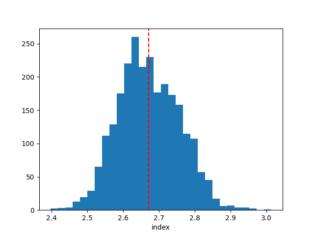
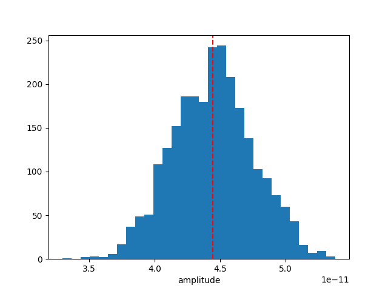

Note
Go to the end to download the full example code. or to run this example in your browser via Binder
Bayesian analysis with nested sampling#
A demonstration of a Bayesian analysis using the nested sampling technique.
Context#
1. Bayesian analysis#
Bayesian inference uses prior knowledge, in the form of a prior distribution, in order to estimate posterior probabilities which we traditionally visualise in the form of corner plots. These distributions contain more information than a maximum likelihood fit as they reveal not only the “best model” but provide a more accurate representation of errors and correlation between parameters. In particular, non-Gaussian degeneracies are complex to estimate with a maximum likelihood approach.
2. Limitations of the Markov Chain Monte Carlo approach#
A well-known approach to estimate this posterior distribution is the Markov Chain Monte Carlo (MCMC). This uses an ensemble of walkers to produce a chain of samples that after a convergence period will reach a stationary state. Once convergence is reached, the successive elements of the chain are samples of the target posterior distribution. However, the weakness of the MCMC approach lies in the “Once convergence” part. If the walkers are started far from the best likelihood region, the convergence time can be long or never reached if the walkers fall in a local minima. The choice of the initialisation point can become critical for complex models with a high number of dimensions and the ability of these walkers to escape a local minimum or to accurately describe a complex likelihood space is not guaranteed.
3. Nested sampling approach#
To overcome these issues, the nested sampling (NS) algorithm has gained traction in physics and astronomy. It is a Monte Carlo algorithm for computing an integral of the likelihood function over the prior model parameter space introduced in Skilling, 2004. The method performs this integral by evolving a collection of points through the parameter space (see recent reviews from Ashton et al., 2022, and Buchner, 2023). Without going into too many details, one important specificity of the NS method is that it starts from the entire parameter space and evolves a collection of live points to map all minima (including multiple modes if any), whereas Markov Chain Monte Carlo methods require an initialisation point and the walkers will explore the local likelihood. The ability of these walkers to escape a local minimum or to accurately describe a complex likelihood space is not guaranteed. This is a fundamental difference with MCMC or Minuit which will only ever probe the vicinity along their minimisation paths and do not have an overview of the global likelihood landscape. The analysis using the NS framework is more CPU time consuming than a standard classical fit, but it provides the full posterior distribution for all parameters, which is out of reach with traditional fitting techniques (N*(N-1)/2 contour plots to generate). In addition, it is more robust to the choice of initialisation, requires less human intervention and is therefore readily integrated in pipeline analysis. In Gammapy, we used the NS implementation of the UltraNest package (see here for more information), one of the leading package in Astronomy (already used in Cosmology and in X-rays). For a nice visualisation of the NS method see here : sampling visualisation. And for a tutorial of UltraNest applied to X-ray fitting with concrete examples and questions see : BXA Tutorial.
Note: please cite UltraNest if used for a paper
If you are using the “UltraNest” library for a paper, please follow its citation scheme: Cite UltraNest.
Proposed approach#
In this example, we will perform a Bayesian analysis with multiple 1D spectra of the Crab nebula data and investigate their posterior distributions.
Setup#
As usual, we’ll start with some setup …
import matplotlib.pyplot as plt
import numpy as np
from gammapy.datasets import Datasets
from gammapy.datasets import SpectrumDatasetOnOff
from gammapy.modeling.models import (
SkyModel,
UniformPrior,
LogUniformPrior,
)
from gammapy.modeling.sampler import Sampler
Loading the spectral datasets#
Here we will load a few Crab 1D spectral data for which we will do a fit.
path = "$GAMMAPY_DATA/joint-crab/spectra/hess/"
datasets = Datasets()
for id in ["23526", "23559", "23592"]:
dataset = SpectrumDatasetOnOff.read(f"{path}pha_obs{id}.fits")
datasets.append(dataset)
Model definition#
Now we want to define the spectral model that will be fitted to the data. The Crab spectra will be fitted here with a simple powerlaw for simplicity.
model = SkyModel.create(spectral_model="pl", name="crab")
Warning
Priors definition: Unlike a traditional fit where priors on the parameters are optional, here it is inherent to the Bayesian approach and are therefore mandatory.
In this case we will set (min,max) prior that will define the
boundaries in which the sampling will be performed.
Note that it is usually recommended to use a LogUniformPrior for
the parameters that have a large amplitude range like the
amplitude parameter.
A UniformPrior means that the samples will be drawn with uniform
probability between the (min,max) values in the linear or log space
in the case of a LogUniformPrior.
model.spectral_model.amplitude.prior = LogUniformPrior(min=1e-12, max=1e-10)
model.spectral_model.index.prior = UniformPrior(min=1, max=5)
datasets.models = [model]
print(datasets.models)
DatasetModels
Component 0: SkyModel
Name : crab
Datasets names : None
Spectral model type : PowerLawSpectralModel
Spatial model type :
Temporal model type :
Parameters:
index : 2.000 +/- 0.00
amplitude : 1.00e-12 +/- 0.0e+00 1 / (TeV s cm2)
reference (frozen): 1.000 TeV
Defining the sampler and options#
As for the Fit object, the Sampler object can receive
different backend (although just one is available for now).
The Sampler comes with “reasonable” default parameters, but you can
change them via the sampler_opts dictionnary.
Here is a short description of the most relevant parameters that you
could change :
live_points: minimum number of live points throughout the run. More points allow to discover multiple peaks if existing, but is slower. To test the Prior boundaries and for debugging, a lower number (~100) can be used before a production run with more points (~400 or more).frac_remain: the cut-off condition for the integration, set by the maximum allowed fraction of posterior mass left in the live points vs the dead points. High values (e.g., 0.5) are faster and can be used if the posterior distribution is a relatively simple shape. A low value (1e-1, 1e-2) is optimal for finding peaks, but slower.log_dir: directory where the output files will be stored. If set to None, no files will be written. If set to a string, a directory will be created containing the ongoing status of the run and final results. For time consuming analysis, it is highly recommended to use that option to monitor the run and restart it in case of a crash (withresume=True).
Important note: unlike the MCMC method, you don’t need to define the number of steps for which the sampler will run. The algorithm will automatically stop once a convergence criteria has been reached.
sampler_opts = {
"live_points": 300,
"frac_remain": 0.3,
"log_dir": None,
}
sampler = Sampler(backend="ultranest", sampler_opts=sampler_opts)
Next we can run the sampler on a given dataset. No options are accepted in the run method.
[ultranest] Sampling 300 live points from prior ...
Mono-modal Volume: ~exp(-4.23) * Expected Volume: exp(0.00) Quality: ok
index : +1.0| ***********************************************| +5.0
amplitude: +1.0e-12|************************************ ****** ****| +1.0e-10
Z=-inf(0.00%) | Like=-3369.12..-60.30 [-3369.1228..-331.1436] | it/evals=0/301 eff=0.0000% N=300
Z=-684.2(0.00%) | Like=-666.68..-60.30 [-3369.1228..-331.1436] | it/evals=18/319 eff=94.7368% N=300
Z=-551.2(0.00%) | Like=-543.57..-60.30 [-3369.1228..-331.1436] | it/evals=30/331 eff=96.7742% N=300
Z=-537.5(0.00%) | Like=-530.60..-60.30 [-3369.1228..-331.1436] | it/evals=47/349 eff=95.9184% N=300
Z=-511.7(0.00%) | Like=-505.87..-60.30 [-3369.1228..-331.1436] | it/evals=60/362 eff=96.7742% N=300
Mono-modal Volume: ~exp(-4.23) Expected Volume: exp(-0.22) Quality: ok
index : +1.0|************************************************| +5.0
amplitude: +1.0e-12|*************** ******************** ** * * ****| +1.0e-10
Z=-497.6(0.00%) | Like=-491.12..-60.30 [-3369.1228..-331.1436] | it/evals=75/378 eff=96.1538% N=300
Z=-483.1(0.00%) | Like=-474.37..-60.30 [-3369.1228..-331.1436] | it/evals=88/396 eff=91.6667% N=300
Z=-478.9(0.00%) | Like=-471.08..-60.30 [-3369.1228..-331.1436] | it/evals=90/400 eff=90.0000% N=300
Z=-463.4(0.00%) | Like=-455.77..-60.30 [-3369.1228..-331.1436] | it/evals=105/418 eff=88.9831% N=300
Z=-447.4(0.00%) | Like=-440.62..-60.30 [-3369.1228..-331.1436] | it/evals=120/434 eff=89.5522% N=300
Mono-modal Volume: ~exp(-4.36) * Expected Volume: exp(-0.45) Quality: ok
index : +1.0| ***********************************************| +5.0
amplitude: +1.0e-12|*************************************** * * ****| +1.0e-10
Z=-433.3(0.00%) | Like=-425.99..-60.30 [-3369.1228..-331.1436] | it/evals=134/449 eff=89.9329% N=300
Z=-418.9(0.00%) | Like=-412.78..-60.30 [-3369.1228..-331.1436] | it/evals=149/468 eff=88.6905% N=300
Z=-418.2(0.00%) | Like=-412.65..-60.30 [-3369.1228..-331.1436] | it/evals=150/469 eff=88.7574% N=300
Z=-405.0(0.00%) | Like=-399.10..-60.30 [-3369.1228..-331.1436] | it/evals=165/487 eff=88.2353% N=300
Z=-393.3(0.00%) | Like=-387.17..-60.30 [-3369.1228..-331.1436] | it/evals=178/505 eff=86.8293% N=300
Z=-391.2(0.00%) | Like=-384.54..-60.30 [-3369.1228..-331.1436] | it/evals=180/507 eff=86.9565% N=300
Z=-370.6(0.00%) | Like=-364.56..-60.30 [-3369.1228..-331.1436] | it/evals=195/525 eff=86.6667% N=300
Mono-modal Volume: ~exp(-4.36) Expected Volume: exp(-0.67) Quality: ok
index : +1.0| ************************** *******************| +5.0
amplitude: +1.0e-12| ************************************** * ******| +1.0e-10
Z=-357.6(0.00%) | Like=-351.08..-60.30 [-3369.1228..-331.1436] | it/evals=208/543 eff=85.5967% N=300
Z=-356.3(0.00%) | Like=-345.21..-60.30 [-3369.1228..-331.1436] | it/evals=210/546 eff=85.3659% N=300
Z=-332.4(0.00%) | Like=-325.97..-60.06 [-331.0965..-181.5877] | it/evals=225/564 eff=85.2273% N=300
Z=-316.4(0.00%) | Like=-309.48..-60.06 [-331.0965..-181.5877] | it/evals=239/583 eff=84.4523% N=300
Z=-315.5(0.00%) | Like=-308.09..-60.06 [-331.0965..-181.5877] | it/evals=240/585 eff=84.2105% N=300
Z=-294.1(0.00%) | Like=-287.49..-60.06 [-331.0965..-181.5877] | it/evals=255/603 eff=84.1584% N=300
Mono-modal Volume: ~exp(-4.79) * Expected Volume: exp(-0.89) Quality: ok
index : +1.0| ********************************************| +5.0
amplitude: +1.0e-12| *************************************** ******| +1.0e-10
Z=-282.9(0.00%) | Like=-277.12..-60.06 [-331.0965..-181.5877] | it/evals=268/621 eff=83.4891% N=300
Z=-282.0(0.00%) | Like=-275.32..-60.06 [-331.0965..-181.5877] | it/evals=270/623 eff=83.5913% N=300
Z=-265.2(0.00%) | Like=-259.20..-60.06 [-331.0965..-181.5877] | it/evals=287/641 eff=84.1642% N=300
Z=-256.5(0.00%) | Like=-250.40..-60.06 [-331.0965..-181.5877] | it/evals=300/656 eff=84.2697% N=300
Z=-248.0(0.00%) | Like=-241.68..-60.06 [-331.0965..-181.5877] | it/evals=314/674 eff=83.9572% N=300
Z=-236.8(0.00%) | Like=-230.60..-59.68 [-331.0965..-181.5877] | it/evals=329/692 eff=83.9286% N=300
Z=-236.3(0.00%) | Like=-226.68..-59.68 [-331.0965..-181.5877] | it/evals=330/693 eff=83.9695% N=300
Mono-modal Volume: ~exp(-5.07) * Expected Volume: exp(-1.12) Quality: ok
index : +1.0| ************************************ *****| +5.0
amplitude: +1.0e-12| ********************************************| +1.0e-10
Z=-228.8(0.00%) | Like=-222.07..-59.68 [-331.0965..-181.5877] | it/evals=335/698 eff=84.1709% N=300
Z=-215.3(0.00%) | Like=-209.26..-59.68 [-331.0965..-181.5877] | it/evals=351/716 eff=84.3750% N=300
Z=-209.6(0.00%) | Like=-203.65..-59.68 [-331.0965..-181.5877] | it/evals=360/732 eff=83.3333% N=300
Z=-204.4(0.00%) | Like=-198.19..-59.68 [-331.0965..-181.5877] | it/evals=373/750 eff=82.8889% N=300
Z=-194.2(0.00%) | Like=-187.91..-59.68 [-331.0965..-181.5877] | it/evals=390/768 eff=83.3333% N=300
Mono-modal Volume: ~exp(-5.52) * Expected Volume: exp(-1.34) Quality: ok
index : +1.0| *********************************** *** | +5.0
amplitude: +1.0e-12| *************************************** * *| +1.0e-10
Z=-189.8(0.00%) | Like=-183.31..-59.68 [-331.0965..-181.5877] | it/evals=402/786 eff=82.7160% N=300
Z=-184.8(0.00%) | Like=-178.82..-59.68 [-181.2029..-129.9304] | it/evals=416/806 eff=82.2134% N=300
Z=-182.4(0.00%) | Like=-175.79..-59.68 [-181.2029..-129.9304] | it/evals=420/814 eff=81.7121% N=300
Z=-178.8(0.00%) | Like=-172.40..-59.68 [-181.2029..-129.9304] | it/evals=433/833 eff=81.2383% N=300
Z=-173.1(0.00%) | Like=-165.86..-59.68 [-181.2029..-129.9304] | it/evals=449/851 eff=81.4882% N=300
Z=-172.4(0.00%) | Like=-165.75..-59.68 [-181.2029..-129.9304] | it/evals=450/852 eff=81.5217% N=300
Z=-169.0(0.00%) | Like=-162.99..-59.68 [-181.2029..-129.9304] | it/evals=460/871 eff=80.5604% N=300
Mono-modal Volume: ~exp(-5.72) * Expected Volume: exp(-1.56) Quality: ok
index : +1.0| ********************************** | +5.0
amplitude: +1.0e-12| **************************************** | +1.0e-10
Z=-166.7(0.00%) | Like=-160.00..-59.68 [-181.2029..-129.9304] | it/evals=469/883 eff=80.4460% N=300
Z=-162.8(0.00%) | Like=-156.73..-59.68 [-181.2029..-129.9304] | it/evals=480/896 eff=80.5369% N=300
Z=-160.6(0.00%) | Like=-155.23..-59.68 [-181.2029..-129.9304] | it/evals=492/914 eff=80.1303% N=300
Z=-158.8(0.00%) | Like=-151.60..-59.68 [-181.2029..-129.9304] | it/evals=503/934 eff=79.3375% N=300
Z=-156.3(0.00%) | Like=-149.71..-59.68 [-181.2029..-129.9304] | it/evals=510/944 eff=79.1925% N=300
Z=-153.5(0.00%) | Like=-147.70..-59.68 [-181.2029..-129.9304] | it/evals=523/962 eff=79.0030% N=300
Mono-modal Volume: ~exp(-5.91) * Expected Volume: exp(-1.79) Quality: ok
index : +1.0| ****************************** | +5.0
amplitude: +1.0e-12| ************************ ************** | +1.0e-10
Z=-150.6(0.00%) | Like=-144.53..-59.68 [-181.2029..-129.9304] | it/evals=536/980 eff=78.8235% N=300
Z=-149.8(0.00%) | Like=-143.87..-59.68 [-181.2029..-129.9304] | it/evals=540/989 eff=78.3745% N=300
Z=-146.9(0.00%) | Like=-140.91..-59.68 [-181.2029..-129.9304] | it/evals=554/1007 eff=78.3593% N=300
Z=-143.3(0.00%) | Like=-136.99..-59.68 [-181.2029..-129.9304] | it/evals=570/1025 eff=78.6207% N=300
Z=-140.8(0.00%) | Like=-135.24..-59.36 [-181.2029..-129.9304] | it/evals=582/1043 eff=78.3311% N=300
Z=-138.9(0.00%) | Like=-132.89..-59.36 [-181.2029..-129.9304] | it/evals=596/1061 eff=78.3180% N=300
Z=-138.3(0.00%) | Like=-132.48..-59.36 [-181.2029..-129.9304] | it/evals=600/1065 eff=78.4314% N=300
Mono-modal Volume: ~exp(-6.02) * Expected Volume: exp(-2.01) Quality: ok
index : +1.0| *************************** +4.0 | +5.0
amplitude: +1.0e-12| *********************************** | +1.0e-10
Z=-137.9(0.00%) | Like=-131.94..-59.36 [-181.2029..-129.9304] | it/evals=603/1068 eff=78.5156% N=300
Z=-134.4(0.00%) | Like=-127.93..-59.36 [-129.7099..-95.7940] | it/evals=618/1086 eff=78.6260% N=300
Z=-131.5(0.00%) | Like=-125.25..-59.36 [-129.7099..-95.7940] | it/evals=630/1098 eff=78.9474% N=300
Z=-129.0(0.00%) | Like=-123.12..-59.36 [-129.7099..-95.7940] | it/evals=643/1116 eff=78.7990% N=300
Z=-126.1(0.00%) | Like=-119.13..-59.36 [-129.7099..-95.7940] | it/evals=659/1135 eff=78.9222% N=300
Z=-125.7(0.00%) | Like=-119.04..-59.36 [-129.7099..-95.7940] | it/evals=660/1137 eff=78.8530% N=300
Z=-123.9(0.00%) | Like=-117.68..-59.36 [-129.7099..-95.7940] | it/evals=669/1156 eff=78.1542% N=300
Mono-modal Volume: ~exp(-6.12) * Expected Volume: exp(-2.23) Quality: ok
index : +1.0| +1.9 *********************** +3.8 | +5.0
amplitude: +1.0e-12| ****************************** ** | +1.0e-10
Z=-123.8(0.00%) | Like=-117.23..-59.36 [-129.7099..-95.7940] | it/evals=670/1157 eff=78.1797% N=300
Z=-121.5(0.00%) | Like=-114.91..-58.92 [-129.7099..-95.7940] | it/evals=683/1177 eff=77.8791% N=300
Z=-120.3(0.00%) | Like=-114.10..-58.92 [-129.7099..-95.7940] | it/evals=690/1187 eff=77.7903% N=300
Z=-117.1(0.00%) | Like=-110.93..-58.86 [-129.7099..-95.7940] | it/evals=706/1206 eff=77.9249% N=300
Z=-115.8(0.00%) | Like=-109.79..-58.86 [-129.7099..-95.7940] | it/evals=717/1225 eff=77.5135% N=300
Z=-115.5(0.00%) | Like=-109.17..-58.86 [-129.7099..-95.7940] | it/evals=720/1228 eff=77.5862% N=300
Z=-113.0(0.00%) | Like=-105.92..-58.86 [-129.7099..-95.7940] | it/evals=729/1246 eff=77.0613% N=300
Mono-modal Volume: ~exp(-6.38) * Expected Volume: exp(-2.46) Quality: ok
index : +1.0| +2.0 ********************* +3.7 | +5.0
amplitude: +1.0e-12| ***************************** +7.9e-11| +1.0e-10
Z=-111.3(0.00%) | Like=-105.17..-58.86 [-129.7099..-95.7940] | it/evals=737/1256 eff=77.0921% N=300
Z=-109.8(0.00%) | Like=-103.45..-58.86 [-129.7099..-95.7940] | it/evals=749/1274 eff=76.8994% N=300
Z=-109.7(0.00%) | Like=-103.04..-58.86 [-129.7099..-95.7940] | it/evals=750/1275 eff=76.9231% N=300
Z=-107.7(0.00%) | Like=-101.44..-58.86 [-129.7099..-95.7940] | it/evals=765/1293 eff=77.0393% N=300
Z=-106.1(0.00%) | Like=-99.83..-58.86 [-129.7099..-95.7940] | it/evals=776/1312 eff=76.6798% N=300
Z=-105.6(0.00%) | Like=-99.41..-58.86 [-129.7099..-95.7940] | it/evals=780/1321 eff=76.3957% N=300
Z=-103.7(0.00%) | Like=-97.10..-58.81 [-129.7099..-95.7940] | it/evals=793/1340 eff=76.2500% N=300
Mono-modal Volume: ~exp(-6.46) * Expected Volume: exp(-2.68) Quality: ok
index : +1.0| +2.0 ******************* +3.6 | +5.0
amplitude: +1.0e-12| ************************** +7.5e-11 | +1.0e-10
Z=-102.4(0.00%) | Like=-96.31..-58.81 [-129.7099..-95.7940] | it/evals=804/1360 eff=75.8491% N=300
Z=-101.9(0.00%) | Like=-95.63..-58.81 [-95.6262..-77.1630] | it/evals=810/1375 eff=75.3488% N=300
Z=-100.6(0.00%) | Like=-94.28..-58.81 [-95.6262..-77.1630] | it/evals=822/1393 eff=75.2059% N=300
Z=-99.1(0.00%) | Like=-93.10..-58.81 [-95.6262..-77.1630] | it/evals=837/1411 eff=75.3375% N=300
Z=-98.9(0.00%) | Like=-92.43..-58.81 [-95.6262..-77.1630] | it/evals=840/1416 eff=75.2688% N=300
Z=-97.5(0.00%) | Like=-90.78..-58.81 [-95.6262..-77.1630] | it/evals=851/1434 eff=75.0441% N=300
Z=-96.1(0.00%) | Like=-89.88..-58.81 [-95.6262..-77.1630] | it/evals=862/1452 eff=74.8264% N=300
Z=-95.5(0.00%) | Like=-89.30..-58.81 [-95.6262..-77.1630] | it/evals=870/1464 eff=74.7423% N=300
Mono-modal Volume: ~exp(-7.31) * Expected Volume: exp(-2.90) Quality: ok
index : +1.0| +2.1 ***************** +3.4 | +5.0
amplitude: +1.0e-12| +2.5e-11 *********************** +7.0e-11 | +1.0e-10
Z=-95.4(0.00%) | Like=-89.04..-58.81 [-95.6262..-77.1630] | it/evals=871/1465 eff=74.7639% N=300
Z=-94.1(0.00%) | Like=-88.13..-58.81 [-95.6262..-77.1630] | it/evals=887/1484 eff=74.9155% N=300
Z=-92.8(0.00%) | Like=-86.17..-58.81 [-95.6262..-77.1630] | it/evals=900/1501 eff=74.9376% N=300
Z=-91.5(0.00%) | Like=-85.28..-58.81 [-95.6262..-77.1630] | it/evals=915/1519 eff=75.0615% N=300
Z=-90.4(0.00%) | Like=-84.23..-58.81 [-95.6262..-77.1630] | it/evals=929/1537 eff=75.1011% N=300
Z=-90.3(0.00%) | Like=-84.21..-58.81 [-95.6262..-77.1630] | it/evals=930/1538 eff=75.1212% N=300
Mono-modal Volume: ~exp(-7.31) Expected Volume: exp(-3.13) Quality: ok
index : +1.0| +2.1 **************** +3.3 | +5.0
amplitude: +1.0e-12| +2.7e-11 ********************* +6.9e-11 | +1.0e-10
Z=-89.6(0.00%) | Like=-83.67..-58.81 [-95.6262..-77.1630] | it/evals=941/1554 eff=75.0399% N=300
Z=-88.8(0.00%) | Like=-82.61..-58.81 [-95.6262..-77.1630] | it/evals=955/1572 eff=75.0786% N=300
Z=-88.4(0.00%) | Like=-82.15..-58.81 [-95.6262..-77.1630] | it/evals=960/1578 eff=75.1174% N=300
Z=-87.8(0.00%) | Like=-81.70..-58.81 [-95.6262..-77.1630] | it/evals=971/1596 eff=74.9228% N=300
Z=-86.9(0.00%) | Like=-80.85..-58.81 [-95.6262..-77.1630] | it/evals=986/1614 eff=75.0381% N=300
Z=-86.7(0.00%) | Like=-80.51..-58.81 [-95.6262..-77.1630] | it/evals=990/1619 eff=75.0569% N=300
Z=-85.9(0.00%) | Like=-79.47..-58.81 [-95.6262..-77.1630] | it/evals=1003/1637 eff=75.0187% N=300
Mono-modal Volume: ~exp(-7.31) Expected Volume: exp(-3.35) Quality: ok
index : +1.0| +2.2 ************** +3.3 | +5.0
amplitude: +1.0e-12| +2.8e-11 ******************* +6.6e-11 | +1.0e-10
Z=-85.1(0.00%) | Like=-78.26..-58.81 [-95.6262..-77.1630] | it/evals=1013/1653 eff=74.8707% N=300
Z=-84.5(0.00%) | Like=-77.98..-58.81 [-95.6262..-77.1630] | it/evals=1020/1662 eff=74.8899% N=300
Z=-83.5(0.00%) | Like=-77.12..-58.81 [-77.1241..-67.5747] | it/evals=1034/1681 eff=74.8733% N=300
Z=-82.8(0.00%) | Like=-76.42..-58.81 [-77.1241..-67.5747] | it/evals=1047/1702 eff=74.6790% N=300
Z=-82.6(0.00%) | Like=-76.25..-58.81 [-77.1241..-67.5747] | it/evals=1050/1707 eff=74.6269% N=300
Z=-81.8(0.00%) | Like=-75.26..-58.81 [-77.1241..-67.5747] | it/evals=1063/1725 eff=74.5965% N=300
Mono-modal Volume: ~exp(-7.46) * Expected Volume: exp(-3.57) Quality: ok
index : +1.0| +2.3 ************ +3.2 | +5.0
amplitude: +1.0e-12| +3.0e-11 ***************** +6.2e-11 | +1.0e-10
Z=-81.2(0.00%) | Like=-74.87..-58.81 [-77.1241..-67.5747] | it/evals=1072/1740 eff=74.4444% N=300
Z=-80.8(0.00%) | Like=-74.09..-58.81 [-77.1241..-67.5747] | it/evals=1080/1751 eff=74.4314% N=300
Z=-79.8(0.00%) | Like=-73.34..-58.81 [-77.1241..-67.5747] | it/evals=1096/1769 eff=74.6086% N=300
Z=-79.1(0.00%) | Like=-72.58..-58.81 [-77.1241..-67.5747] | it/evals=1109/1787 eff=74.5797% N=300
Z=-79.0(0.00%) | Like=-72.55..-58.81 [-77.1241..-67.5747] | it/evals=1110/1788 eff=74.5968% N=300
Z=-78.3(0.00%) | Like=-71.90..-58.81 [-77.1241..-67.5747] | it/evals=1125/1808 eff=74.6021% N=300
Z=-77.8(0.00%) | Like=-71.57..-58.81 [-77.1241..-67.5747] | it/evals=1136/1827 eff=74.3942% N=300
Mono-modal Volume: ~exp(-7.86) * Expected Volume: exp(-3.80) Quality: ok
index : +1.0| +2.3 *********** +3.1 | +5.0
amplitude: +1.0e-12| +3.1e-11 *************** +6.1e-11 | +1.0e-10
Z=-77.7(0.00%) | Like=-71.34..-58.81 [-77.1241..-67.5747] | it/evals=1139/1831 eff=74.3958% N=300
Z=-77.6(0.00%) | Like=-71.33..-58.81 [-77.1241..-67.5747] | it/evals=1140/1833 eff=74.3640% N=300
Z=-77.2(0.00%) | Like=-70.97..-58.81 [-77.1241..-67.5747] | it/evals=1152/1851 eff=74.2747% N=300
Z=-76.8(0.00%) | Like=-70.59..-58.81 [-77.1241..-67.5747] | it/evals=1164/1869 eff=74.1874% N=300
Z=-76.6(0.00%) | Like=-70.49..-58.81 [-77.1241..-67.5747] | it/evals=1170/1879 eff=74.0975% N=300
Z=-76.1(0.00%) | Like=-69.58..-58.81 [-77.1241..-67.5747] | it/evals=1184/1898 eff=74.0926% N=300
Z=-75.5(0.00%) | Like=-68.98..-58.81 [-77.1241..-67.5747] | it/evals=1199/1918 eff=74.1038% N=300
Z=-75.4(0.00%) | Like=-68.94..-58.81 [-77.1241..-67.5747] | it/evals=1200/1919 eff=74.1198% N=300
Mono-modal Volume: ~exp(-7.86) Expected Volume: exp(-4.02) Quality: ok
index : +1.0| +2.3 ********** +3.1 | +5.0
amplitude: +1.0e-12| +3.2e-11 ************** +5.9e-11 | +1.0e-10
Z=-75.1(0.00%) | Like=-68.66..-58.81 [-77.1241..-67.5747] | it/evals=1209/1936 eff=73.8998% N=300
Z=-74.6(0.01%) | Like=-68.08..-58.81 [-77.1241..-67.5747] | it/evals=1224/1954 eff=74.0024% N=300
Z=-74.3(0.01%) | Like=-67.93..-58.81 [-77.1241..-67.5747] | it/evals=1230/1962 eff=74.0072% N=300
Z=-73.8(0.02%) | Like=-67.51..-58.81 [-67.5724..-65.5572] | it/evals=1245/1980 eff=74.1071% N=300
Z=-73.5(0.02%) | Like=-67.14..-58.81 [-67.5724..-65.5572] | it/evals=1255/1999 eff=73.8670% N=300
Z=-73.4(0.03%) | Like=-67.08..-58.81 [-67.5724..-65.5572] | it/evals=1260/2004 eff=73.9437% N=300
Z=-73.1(0.04%) | Like=-66.74..-58.81 [-67.5724..-65.5572] | it/evals=1272/2022 eff=73.8676% N=300
Mono-modal Volume: ~exp(-8.01) * Expected Volume: exp(-4.24) Quality: ok
index : +1.0| +2.4 ********* +3.0 | +5.0
amplitude: +1.0e-12| +3.4e-11 ************* +5.7e-11 | +1.0e-10
Z=-73.1(0.04%) | Like=-66.74..-58.81 [-67.5724..-65.5572] | it/evals=1273/2027 eff=73.7116% N=300
Z=-72.6(0.06%) | Like=-66.33..-58.81 [-67.5724..-65.5572] | it/evals=1289/2045 eff=73.8682% N=300
Z=-72.6(0.06%) | Like=-66.31..-58.81 [-67.5724..-65.5572] | it/evals=1290/2047 eff=73.8409% N=300
Z=-72.3(0.08%) | Like=-66.06..-58.81 [-67.5724..-65.5572] | it/evals=1304/2065 eff=73.8810% N=300
Z=-72.0(0.11%) | Like=-65.66..-58.81 [-67.5724..-65.5572] | it/evals=1316/2084 eff=73.7668% N=300
Z=-71.9(0.12%) | Like=-65.58..-58.81 [-67.5724..-65.5572] | it/evals=1320/2088 eff=73.8255% N=300
Z=-71.6(0.17%) | Like=-65.21..-58.81 [-65.2197..-65.2056] | it/evals=1335/2108 eff=73.8385% N=300
Mono-modal Volume: ~exp(-8.49) * Expected Volume: exp(-4.47) Quality: ok
index : +1.0| +2.4 ******** +3.0 | +5.0
amplitude: +1.0e-12| +3.5e-11 *********** +5.6e-11 | +1.0e-10
Z=-71.5(0.19%) | Like=-65.15..-58.81 [-65.1724..-65.1496] | it/evals=1340/2118 eff=73.7074% N=300
Z=-71.3(0.23%) | Like=-64.98..-58.81 [-64.9857..-64.9754] | it/evals=1350/2129 eff=73.8108% N=300
Z=-71.0(0.31%) | Like=-64.67..-58.81 [-64.6952..-64.6706] | it/evals=1365/2147 eff=73.9036% N=300
Z=-70.7(0.41%) | Like=-64.47..-58.81 [-64.4733..-64.4675]*| it/evals=1380/2167 eff=73.9154% N=300
Z=-70.5(0.50%) | Like=-64.33..-58.81 [-64.3267..-64.2979] | it/evals=1391/2185 eff=73.7931% N=300
Z=-70.3(0.60%) | Like=-64.14..-58.81 [-64.1423..-64.1248] | it/evals=1403/2203 eff=73.7257% N=300
Mono-modal Volume: ~exp(-8.66) * Expected Volume: exp(-4.69) Quality: ok
index : +1.0| +2.4 ******** +3.0 | +5.0
amplitude: +1.0e-12| +3.5e-11 *********** +5.5e-11 | +1.0e-10
Z=-70.3(0.64%) | Like=-64.03..-58.81 [-64.0349..-64.0139] | it/evals=1407/2211 eff=73.6264% N=300
Z=-70.2(0.67%) | Like=-63.98..-58.81 [-63.9912..-63.9792] | it/evals=1410/2215 eff=73.6292% N=300
Z=-70.0(0.84%) | Like=-63.69..-58.81 [-63.6860..-63.6780]*| it/evals=1425/2233 eff=73.7196% N=300
Z=-69.8(1.05%) | Like=-63.53..-58.81 [-63.5446..-63.5336] | it/evals=1440/2250 eff=73.8462% N=300
Z=-69.5(1.29%) | Like=-63.24..-58.80 [-63.2421..-63.2388]*| it/evals=1457/2268 eff=74.0346% N=300
Z=-69.4(1.54%) | Like=-63.06..-58.80 [-63.0612..-63.0518]*| it/evals=1470/2282 eff=74.1675% N=300
Mono-modal Volume: ~exp(-9.12) * Expected Volume: exp(-4.91) Quality: ok
index : +1.0| +2.4 ****** +2.9 | +5.0
amplitude: +1.0e-12| +3.6e-11 ********* +5.4e-11 | +1.0e-10
Z=-69.3(1.63%) | Like=-63.00..-58.80 [-62.9989..-62.9869] | it/evals=1474/2286 eff=74.2195% N=300
Z=-69.1(1.93%) | Like=-62.81..-58.80 [-62.8219..-62.8090] | it/evals=1489/2304 eff=74.3014% N=300
Z=-69.0(2.21%) | Like=-62.72..-58.80 [-62.7218..-62.7178]*| it/evals=1500/2317 eff=74.3679% N=300
Z=-68.8(2.62%) | Like=-62.48..-58.80 [-62.4767..-62.4749]*| it/evals=1514/2335 eff=74.3980% N=300
Z=-68.7(3.11%) | Like=-62.29..-58.80 [-62.2858..-62.2767]*| it/evals=1527/2354 eff=74.3427% N=300
Z=-68.6(3.24%) | Like=-62.27..-58.80 [-62.2693..-62.2672]*| it/evals=1530/2360 eff=74.2718% N=300
Mono-modal Volume: ~exp(-9.19) * Expected Volume: exp(-5.14) Quality: ok
index : +1.0| +2.5 ****** +2.9 | +5.0
amplitude: +1.0e-12| +3.7e-11 ********* +5.3e-11 | +1.0e-10
Z=-68.5(3.65%) | Like=-62.18..-58.80 [-62.1965..-62.1822] | it/evals=1541/2377 eff=74.1935% N=300
Z=-68.3(4.24%) | Like=-62.03..-58.78 [-62.0266..-62.0175]*| it/evals=1557/2395 eff=74.3198% N=300
Z=-68.3(4.36%) | Like=-62.01..-58.78 [-62.0053..-62.0036]*| it/evals=1560/2398 eff=74.3565% N=300
Z=-68.2(5.01%) | Like=-61.90..-58.78 [-61.9018..-61.8999]*| it/evals=1574/2416 eff=74.3856% N=300
Z=-68.1(5.62%) | Like=-61.78..-58.78 [-61.8230..-61.7831] | it/evals=1587/2435 eff=74.3326% N=300
Z=-68.0(5.79%) | Like=-61.77..-58.75 [-61.7670..-61.7651]*| it/evals=1590/2439 eff=74.3338% N=300
Z=-67.9(6.45%) | Like=-61.64..-58.75 [-61.6447..-61.6409]*| it/evals=1604/2458 eff=74.3281% N=300
Mono-modal Volume: ~exp(-9.69) * Expected Volume: exp(-5.36) Quality: ok
index : +1.0| +2.5 ****** +2.9 | +5.0
amplitude: +1.0e-12| +3.8e-11 ******** +5.2e-11 | +1.0e-10
Z=-67.9(6.72%) | Like=-61.63..-58.75 [-61.6250..-61.6228]*| it/evals=1608/2464 eff=74.3068% N=300
Z=-67.8(7.37%) | Like=-61.48..-58.75 [-61.4826..-61.4606] | it/evals=1620/2478 eff=74.3802% N=300
Z=-67.6(8.53%) | Like=-61.34..-58.75 [-61.3627..-61.3370] | it/evals=1638/2496 eff=74.5902% N=300
Z=-67.5(9.40%) | Like=-61.21..-58.75 [-61.2144..-61.2119]*| it/evals=1650/2515 eff=74.4921% N=300
Z=-67.5(10.37%) | Like=-61.16..-58.75 [-61.1649..-61.1605]*| it/evals=1662/2533 eff=74.4290% N=300
Mono-modal Volume: ~exp(-9.69) Expected Volume: exp(-5.58) Quality: ok
index : +1.0| +2.5 ***** +2.9 | +5.0
amplitude: +1.0e-12| +3.8e-11 ******* +5.1e-11 | +1.0e-10
Z=-67.4(11.37%) | Like=-61.07..-58.75 [-61.0828..-61.0685] | it/evals=1675/2549 eff=74.4775% N=300
Z=-67.3(11.74%) | Like=-61.03..-58.75 [-61.0279..-61.0259]*| it/evals=1680/2556 eff=74.4681% N=300
Z=-67.2(12.88%) | Like=-60.95..-58.75 [-60.9464..-60.9329] | it/evals=1694/2574 eff=74.4943% N=300
Z=-67.2(14.12%) | Like=-60.86..-58.75 [-60.8640..-60.8584]*| it/evals=1708/2593 eff=74.4876% N=300
Z=-67.1(14.31%) | Like=-60.85..-58.75 [-60.8548..-60.8515]*| it/evals=1710/2597 eff=74.4449% N=300
Z=-67.1(15.23%) | Like=-60.76..-58.75 [-60.7803..-60.7623] | it/evals=1720/2615 eff=74.2981% N=300
Z=-67.0(16.44%) | Like=-60.68..-58.75 [-60.6754..-60.6677]*| it/evals=1733/2633 eff=74.2820% N=300
Z=-67.0(16.99%) | Like=-60.63..-58.75 [-60.6325..-60.6297]*| it/evals=1740/2640 eff=74.3590% N=300
Mono-modal Volume: ~exp(-9.99) * Expected Volume: exp(-5.81) Quality: ok
index : +1.0| +2.5 ***** +2.8 | +5.0
amplitude: +1.0e-12| +3.9e-11 ****** +5.0e-11 | +1.0e-10
Z=-67.0(17.20%) | Like=-60.62..-58.75 [-60.6297..-60.6155] | it/evals=1742/2642 eff=74.3809% N=300
Z=-66.9(18.72%) | Like=-60.52..-58.75 [-60.5158..-60.5103]*| it/evals=1758/2660 eff=74.4915% N=300
Z=-66.8(20.00%) | Like=-60.47..-58.75 [-60.4685..-60.4640]*| it/evals=1770/2673 eff=74.5891% N=300
Z=-66.7(21.54%) | Like=-60.41..-58.75 [-60.4097..-60.4046]*| it/evals=1785/2691 eff=74.6550% N=300
Z=-66.7(22.97%) | Like=-60.32..-58.75 [-60.3391..-60.3217] | it/evals=1798/2709 eff=74.6368% N=300
Z=-66.7(23.23%) | Like=-60.32..-58.75 [-60.3204..-60.3190]*| it/evals=1800/2713 eff=74.5959% N=300
Mono-modal Volume: ~exp(-10.17) * Expected Volume: exp(-6.03) Quality: ok
index : +1.0| +2.5 **** +2.8 | +5.0
amplitude: +1.0e-12| +3.9e-11 ****** +5.0e-11 | +1.0e-10
Z=-66.6(24.17%) | Like=-60.30..-58.75 [-60.2985..-60.2974]*| it/evals=1809/2725 eff=74.5979% N=300
Z=-66.6(25.83%) | Like=-60.24..-58.75 [-60.2417..-60.2345]*| it/evals=1824/2744 eff=74.6318% N=300
Z=-66.5(26.62%) | Like=-60.20..-58.75 [-60.2022..-60.2015]*| it/evals=1830/2751 eff=74.6634% N=300
Z=-66.5(28.28%) | Like=-60.12..-58.75 [-60.1225..-60.1146]*| it/evals=1845/2769 eff=74.7266% N=300
Z=-66.4(29.70%) | Like=-60.05..-58.75 [-60.0526..-60.0519]*| it/evals=1858/2787 eff=74.7085% N=300
Z=-66.4(29.95%) | Like=-60.05..-58.75 [-60.0476..-60.0475]*| it/evals=1860/2789 eff=74.7288% N=300
Z=-66.4(31.58%) | Like=-60.02..-58.75 [-60.0216..-60.0182]*| it/evals=1874/2807 eff=74.7507% N=300
Mono-modal Volume: ~exp(-10.17) Expected Volume: exp(-6.25) Quality: ok
index : +1.0| +2.5 **** +2.8 | +5.0
amplitude: +1.0e-12| +4.0e-11 ****** +4.9e-11 | +1.0e-10
Z=-66.3(32.88%) | Like=-59.98..-58.75 [-59.9827..-59.9733]*| it/evals=1887/2823 eff=74.7919% N=300
Z=-66.3(33.20%) | Like=-59.96..-58.75 [-59.9632..-59.9607]*| it/evals=1890/2827 eff=74.7922% N=300
Z=-66.3(34.86%) | Like=-59.91..-58.75 [-59.9145..-59.9141]*| it/evals=1903/2845 eff=74.7741% N=300
Z=-66.2(36.84%) | Like=-59.84..-58.75 [-59.8390..-59.8358]*| it/evals=1919/2863 eff=74.8732% N=300
Z=-66.2(36.97%) | Like=-59.84..-58.75 [-59.8358..-59.8335]*| it/evals=1920/2864 eff=74.8830% N=300
Z=-66.1(38.98%) | Like=-59.79..-58.75 [-59.7918..-59.7908]*| it/evals=1937/2882 eff=75.0194% N=300
Mono-modal Volume: ~exp(-10.21) * Expected Volume: exp(-6.48) Quality: ok
index : +1.0| +2.6 **** +2.8 | +5.0
amplitude: +1.0e-12| +4.0e-11 ***** +4.9e-11 | +1.0e-10
Z=-66.1(39.70%) | Like=-59.78..-58.75 [-59.7758..-59.7722]*| it/evals=1943/2892 eff=74.9614% N=300
Z=-66.1(40.40%) | Like=-59.74..-58.75 [-59.7440..-59.7433]*| it/evals=1950/2899 eff=75.0289% N=300
Z=-66.1(42.04%) | Like=-59.70..-58.75 [-59.7029..-59.7028]*| it/evals=1964/2917 eff=75.0478% N=300
Z=-66.0(43.51%) | Like=-59.67..-58.75 [-59.6745..-59.6688]*| it/evals=1977/2936 eff=75.0000% N=300
Z=-66.0(43.83%) | Like=-59.67..-58.75 [-59.6679..-59.6642]*| it/evals=1980/2939 eff=75.0284% N=300
Z=-66.0(45.16%) | Like=-59.63..-58.75 [-59.6297..-59.6269]*| it/evals=1992/2957 eff=74.9718% N=300
Z=-66.0(46.76%) | Like=-59.58..-58.75 [-59.5821..-59.5804]*| it/evals=2007/2976 eff=75.0000% N=300
Mono-modal Volume: ~exp(-10.60) * Expected Volume: exp(-6.70) Quality: ok
index : +1.0| +2.6 **** +2.8 | +5.0
amplitude: +1.0e-12| +4.1e-11 **** +4.8e-11 | +1.0e-10
Z=-66.0(47.06%) | Like=-59.58..-58.75 [-59.5789..-59.5741]*| it/evals=2010/2979 eff=75.0280% N=300
Z=-65.9(48.73%) | Like=-59.52..-58.75 [-59.5195..-59.5170]*| it/evals=2024/2997 eff=75.0463% N=300
Z=-65.9(50.14%) | Like=-59.48..-58.75 [-59.4835..-59.4821]*| it/evals=2036/3015 eff=74.9908% N=300
Z=-65.9(50.51%) | Like=-59.47..-58.75 [-59.4738..-59.4734]*| it/evals=2040/3021 eff=74.9724% N=300
Z=-65.9(51.86%) | Like=-59.45..-58.75 [-59.4500..-59.4391] | it/evals=2052/3039 eff=74.9179% N=300
Z=-65.8(53.32%) | Like=-59.41..-58.75 [-59.4074..-59.4060]*| it/evals=2066/3058 eff=74.9094% N=300
Z=-65.8(53.71%) | Like=-59.40..-58.75 [-59.3995..-59.3975]*| it/evals=2070/3062 eff=74.9457% N=300
Mono-modal Volume: ~exp(-10.60) Expected Volume: exp(-6.92) Quality: ok
index : +1.0| +2.6 **** +2.8 | +5.0
amplitude: +1.0e-12| +4.1e-11 **** +4.8e-11 | +1.0e-10
Z=-65.8(54.91%) | Like=-59.37..-58.75 [-59.3744..-59.3743]*| it/evals=2081/3078 eff=74.9100% N=300
Z=-65.8(56.28%) | Like=-59.36..-58.75 [-59.3569..-59.3567]*| it/evals=2094/3096 eff=74.8927% N=300
Z=-65.8(56.90%) | Like=-59.35..-58.75 [-59.3501..-59.3501]*| it/evals=2100/3108 eff=74.7863% N=300
Z=-65.7(58.27%) | Like=-59.32..-58.75 [-59.3175..-59.3168]*| it/evals=2114/3126 eff=74.8054% N=300
Z=-65.7(59.51%) | Like=-59.28..-58.75 [-59.2833..-59.2829]*| it/evals=2127/3144 eff=74.7890% N=300
Z=-65.7(59.78%) | Like=-59.28..-58.75 [-59.2808..-59.2777]*| it/evals=2130/3149 eff=74.7631% N=300
Z=-65.7(60.82%) | Like=-59.26..-58.75 [-59.2650..-59.2598]*| it/evals=2140/3167 eff=74.6425% N=300
Mono-modal Volume: ~exp(-11.00) * Expected Volume: exp(-7.15) Quality: ok
index : +1.0| +2.6 *** +2.7 | +5.0
amplitude: +1.0e-12| +4.1e-11 **** +4.7e-11 | +1.0e-10
Z=-65.7(61.18%) | Like=-59.26..-58.75 [-59.2573..-59.2542]*| it/evals=2144/3174 eff=74.5999% N=300
Z=-65.7(62.19%) | Like=-59.23..-58.75 [-59.2325..-59.2274]*| it/evals=2154/3192 eff=74.4813% N=300
Z=-65.7(62.81%) | Like=-59.22..-58.75 [-59.2246..-59.2236]*| it/evals=2160/3200 eff=74.4828% N=300
Z=-65.6(63.96%) | Like=-59.20..-58.75 [-59.2029..-59.2024]*| it/evals=2172/3218 eff=74.4345% N=300
Z=-65.6(65.29%) | Like=-59.18..-58.75 [-59.1803..-59.1803]*| it/evals=2187/3237 eff=74.4637% N=300
Z=-65.6(65.58%) | Like=-59.17..-58.75 [-59.1742..-59.1739]*| it/evals=2190/3244 eff=74.3886% N=300
Z=-65.6(67.01%) | Like=-59.16..-58.75 [-59.1551..-59.1536]*| it/evals=2206/3262 eff=74.4767% N=300
Mono-modal Volume: ~exp(-11.00) Expected Volume: exp(-7.37) Quality: ok
index : +1.0| +2.6 ** +2.7 | +5.0
amplitude: +1.0e-12| +4.2e-11 **** +4.7e-11 | +1.0e-10
Z=-65.6(67.54%) | Like=-59.15..-58.75 [-59.1503..-59.1490]*| it/evals=2212/3279 eff=74.2531% N=300
Z=-65.6(68.22%) | Like=-59.14..-58.75 [-59.1388..-59.1374]*| it/evals=2220/3291 eff=74.2227% N=300
Z=-65.6(69.13%) | Like=-59.11..-58.75 [-59.1146..-59.1082]*| it/evals=2231/3312 eff=74.0704% N=300
[ultranest] Explored until L=-6e+01
[ultranest] Likelihood function evaluations: 3328
[ultranest] logZ = -65.18 +- 0.08565
[ultranest] Effective samples strategy satisfied (ESS = 1029.4, need >400)
[ultranest] Posterior uncertainty strategy is satisfied (KL: 0.45+-0.08 nat, need <0.50 nat)
[ultranest] Evidency uncertainty strategy is satisfied (dlogz=0.28, need <0.5)
[ultranest] logZ error budget: single: 0.13 bs:0.09 tail:0.26 total:0.28 required:<0.50
[ultranest] done iterating.
logZ = -65.189 +- 0.313
single instance: logZ = -65.189 +- 0.134
bootstrapped : logZ = -65.184 +- 0.172
tail : logZ = +- 0.262
insert order U test : converged: True correlation: inf iterations
index : 2.343 │ ▁▁▁ ▁▁▁▁▁▃▃▃▃▅▆▆▆▇▆▆▇▅▄▄▃▃▂▁▂▁▁▁▁▁ ▁▁ │3.025 2.673 +- 0.088
amplitude : 0.0000000000340│ ▁▁▁▁▁▁▁▂▂▃▄▄▄▅▅▇▆▆▇▇▇▅▅▄▄▃▂▂▂▁▁▁▁▁▁ ▁ │0.0000000000557 0.0000000000444 +- 0.0000000000031
Understanding the outputs#
In the Jupyter notebook, you should be able to see an interactive visualisation of how the parameter space shrinks which starts from the (min,max) shrinks down towards the optimal parameters.
The output above is filled with interesting information. Here we provide a short description of the most relevant information provided above. For more detailed information see the UltraNest docs.
During the sampling
Z=-68.8(0.53%) | Like=-63.96..-58.75 [-63.9570..-63.9539]*| it/evals=640/1068 eff=73.7327% N=300
Some important information here is:
Progress (0.53%): the completed fraction of the integral. This is not a time progress bar. Stays at zero for a good fraction of the run.
Efficiency (eff value) of the sampling: this indicates out of the proposed new points, how many were accepted. If your efficiency is too small (<<1%), maybe you should revise your priors (e.g use a LogUniform prior for the normalisation).
Final outputs
The final lines indicate that all three “convergence” strategies are satisfied (samples, posterior uncertainty, and evidence uncertainty).
logZ = -65.104 +- 0.292
The main goal of the Nested sampling algorithm is to estimate Z (the Bayesian evidence) which is given above together with an uncertainty. In a similar way to deltaLogLike and deltaAIC, deltaLogZ values can be used for model comparison. For more information see : on the use of the evidence for model comparison. An interesting comparison of the efficiency and false discovery rate of model selection with deltaLogLike and deltaLogZ is given in Appendix C of Buchner et al., 2014.
Results stored on disk
if log_dir is set to a name where the results will be stored, then
a directory is created containing many useful results and plots.
A description of these outputs is given in the Ultranest
docs.
Results#
Within a Bayesian analysis, the concept of best-fit has to be viewed differently from what is done in a gradient descent fit.
The output of the Bayesian analysis is the posterior distribution and there is no “best-fit” output. One has to define, based on the posteriors, what we want to consider as “best-fit” and several options are possible:
the mean of the distribution
the median
the lowest likelihood value
By default the DatasetModels will be updated with the mean of
the posterior distributions.
print(result_joint.models)
DatasetModels
Component 0: SkyModel
Name : crab
Datasets names : None
Spectral model type : PowerLawSpectralModel
Spatial model type :
Temporal model type :
Parameters:
index : 2.673 +/- 0.09
amplitude : 4.44e-11 +/- 3.1e-12 1 / (TeV s cm2)
reference (frozen): 1.000 TeV
The Sampler class returns a very rich dictionnary.
The most “standard” information about the posterior distributions can
be found in :
print(result_joint.sampler_results["posterior"])
{'mean': [2.6732819519810076, 4.442579163053336e-11], 'stdev': [0.08797641221397066, 3.1043906488405507e-12], 'median': [2.6713932210266504, 4.4507554729834987e-11], 'errlo': [2.5870989296274365, 4.1241837606772644e-11], 'errup': [2.761660881428273, 4.7567055132318095e-11], 'information_gain_bits': [2.67710947949968, 3.0881659983183414]}
Besides mean, errors, etc, an interesting value is the
information gain which estimates how much the posterior
distribution has shrinked with respect to the prior (i.e. how much
we’ve learned). A value < 1 means that the parameter is poorly
constrained within the prior range (we haven’t learned much with respect to our prior assumption).
For a physical example see this
example.
The SamplerResult dictionary contains also other interesting
information :
print(result_joint.sampler_results.keys())
dict_keys(['niter', 'logz', 'logzerr', 'logz_bs', 'logz_single', 'logzerr_tail', 'logzerr_bs', 'ess', 'H', 'Herr', 'posterior', 'weighted_samples', 'samples', 'maximum_likelihood', 'ncall', 'paramnames', 'logzerr_single', 'insertion_order_MWW_test'])
Of particular interest, the samples used in the process to approximate the posterior distribution can be accessed via :
for i, n in enumerate(model.parameters.free_parameters.names):
s = result_joint.samples[:, i]
fig, ax = plt.subplots()
ax.hist(s, bins=30)
ax.axvline(np.mean(s), ls="--", color="red")
ax.set_xlabel(n)
plt.show()
- 
- 
While the above plots are interesting, the real strength of the Bayesian analysis is to visualise all parameters correlations which is usually done using “corner plots”. Ultranest corner plot function is a wrapper around the corner package. See the above link for optional keywords. Other packages exist for corner plots, like chainconsumer which is discussed later in this tutorial.
from ultranest.plot import cornerplot
cornerplot(
result_joint.sampler_results,
plot_datapoints=True,
plot_density=True,
bins=20,
title_fmt=".2e",
smooth=False,
)
plt.show()
Individual run analysis#
Now we’ll analyse several Crab runs individually so that we can compare them.
result_0 = sampler.run(datasets[0])
result_1 = sampler.run(datasets[1])
result_2 = sampler.run(datasets[2])
[ultranest] Sampling 300 live points from prior ...
Mono-modal Volume: ~exp(-3.84) * Expected Volume: exp(0.00) Quality: ok
index : +1.0|************************************************| +5.0
amplitude: +1.0e-12|********************* *********************** * | +1.0e-10
Z=-inf(0.00%) | Like=-1197.79..-21.62 [-1197.7892..-113.6746] | it/evals=0/301 eff=0.0000% N=300
Z=-178.0(0.00%) | Like=-173.49..-21.62 [-1197.7892..-113.6746] | it/evals=29/333 eff=87.8788% N=300
Z=-177.7(0.00%) | Like=-173.04..-21.62 [-1197.7892..-113.6746] | it/evals=30/334 eff=88.2353% N=300
Z=-165.6(0.00%) | Like=-160.64..-21.62 [-1197.7892..-113.6746] | it/evals=59/366 eff=89.3939% N=300
Z=-165.3(0.00%) | Like=-160.35..-21.62 [-1197.7892..-113.6746] | it/evals=60/367 eff=89.5522% N=300
Mono-modal Volume: ~exp(-4.34) * Expected Volume: exp(-0.22) Quality: ok
index : +1.0|* **********************************************| +5.0
amplitude: +1.0e-12|*********************************** ******** * | +1.0e-10
Z=-163.5(0.00%) | Like=-159.13..-21.62 [-1197.7892..-113.6746] | it/evals=67/377 eff=87.0130% N=300
Z=-156.5(0.00%) | Like=-151.65..-21.62 [-1197.7892..-113.6746] | it/evals=90/407 eff=84.1121% N=300
Z=-147.3(0.00%) | Like=-141.36..-21.62 [-1197.7892..-113.6746] | it/evals=118/439 eff=84.8921% N=300
Z=-146.2(0.00%) | Like=-140.58..-21.62 [-1197.7892..-113.6746] | it/evals=120/441 eff=85.1064% N=300
Mono-modal Volume: ~exp(-4.55) * Expected Volume: exp(-0.45) Quality: ok
index : +1.0|************************************************| +5.0
amplitude: +1.0e-12|*********************************** ******** * | +1.0e-10
Z=-140.9(0.00%) | Like=-136.11..-21.62 [-1197.7892..-113.6746] | it/evals=134/457 eff=85.3503% N=300
Z=-135.4(0.00%) | Like=-129.19..-21.62 [-1197.7892..-113.6746] | it/evals=150/475 eff=85.7143% N=300
Z=-125.1(0.00%) | Like=-119.21..-21.62 [-1197.7892..-113.6746] | it/evals=178/507 eff=85.9903% N=300
Z=-124.1(0.00%) | Like=-118.34..-21.62 [-1197.7892..-113.6746] | it/evals=180/509 eff=86.1244% N=300
Mono-modal Volume: ~exp(-4.55) Expected Volume: exp(-0.67) Quality: ok
index : +1.0| **********************************************| +5.0
amplitude: +1.0e-12| ********************************** ******** | +1.0e-10
Z=-118.9(0.00%) | Like=-113.71..-21.62 [-1197.7892..-113.6746] | it/evals=201/542 eff=83.0579% N=300
Z=-115.9(0.00%) | Like=-109.53..-21.62 [-113.6428..-70.3739] | it/evals=210/553 eff=83.0040% N=300
Z=-106.8(0.00%) | Like=-101.99..-21.62 [-113.6428..-70.3739] | it/evals=236/585 eff=82.8070% N=300
Z=-106.2(0.00%) | Like=-101.44..-21.62 [-113.6428..-70.3739] | it/evals=240/590 eff=82.7586% N=300
Z=-101.9(0.00%) | Like=-96.42..-21.62 [-113.6428..-70.3739] | it/evals=259/623 eff=80.1858% N=300
Mono-modal Volume: ~exp(-4.60) * Expected Volume: exp(-0.89) Quality: ok
index : +1.0| *******************************************| +5.0
amplitude: +1.0e-12| ********************************* ********* *| +1.0e-10
Z=-99.7(0.00%) | Like=-94.38..-21.62 [-113.6428..-70.3739] | it/evals=268/636 eff=79.7619% N=300
Z=-99.2(0.00%) | Like=-94.00..-21.62 [-113.6428..-70.3739] | it/evals=270/639 eff=79.6460% N=300
Z=-93.1(0.00%) | Like=-87.78..-21.28 [-113.6428..-70.3739] | it/evals=297/671 eff=80.0539% N=300
Z=-92.5(0.00%) | Like=-87.22..-21.28 [-113.6428..-70.3739] | it/evals=300/674 eff=80.2139% N=300
Z=-88.5(0.00%) | Like=-83.44..-21.28 [-113.6428..-70.3739] | it/evals=317/709 eff=77.5061% N=300
Z=-85.5(0.00%) | Like=-79.92..-21.28 [-113.6428..-70.3739] | it/evals=330/731 eff=76.5661% N=300
Mono-modal Volume: ~exp(-4.84) * Expected Volume: exp(-1.12) Quality: ok
index : +1.0| ************************************ ******| +5.0
amplitude: +1.0e-12| ********************************* ** **** | +1.0e-10
Z=-84.4(0.00%) | Like=-79.28..-21.28 [-113.6428..-70.3739] | it/evals=335/739 eff=76.3098% N=300
Z=-81.3(0.00%) | Like=-76.11..-21.28 [-113.6428..-70.3739] | it/evals=357/772 eff=75.6356% N=300
Z=-80.8(0.00%) | Like=-75.75..-21.28 [-113.6428..-70.3739] | it/evals=360/779 eff=75.1566% N=300
Z=-77.5(0.00%) | Like=-72.63..-21.28 [-113.6428..-70.3739] | it/evals=386/812 eff=75.3906% N=300
Z=-76.9(0.00%) | Like=-71.66..-21.28 [-113.6428..-70.3739] | it/evals=390/816 eff=75.5814% N=300
Mono-modal Volume: ~exp(-5.33) * Expected Volume: exp(-1.34) Quality: ok
index : +1.0| **************************************** | +5.0
amplitude: +1.0e-12| ******************************** *** | +1.0e-10
Z=-75.5(0.00%) | Like=-70.84..-21.01 [-113.6428..-70.3739] | it/evals=402/834 eff=75.2809% N=300
Z=-73.8(0.00%) | Like=-69.21..-21.01 [-70.2484..-50.9512] | it/evals=420/859 eff=75.1342% N=300
Z=-70.3(0.00%) | Like=-64.97..-21.01 [-70.2484..-50.9512] | it/evals=446/892 eff=75.3378% N=300
Z=-69.8(0.00%) | Like=-64.55..-21.01 [-70.2484..-50.9512] | it/evals=450/896 eff=75.5034% N=300
Mono-modal Volume: ~exp(-5.33) Expected Volume: exp(-1.56) Quality: ok
index : +1.0| ********************************** | +5.0
amplitude: +1.0e-12| ********************************* * | +1.0e-10
Z=-67.7(0.00%) | Like=-62.74..-21.01 [-70.2484..-50.9512] | it/evals=471/926 eff=75.2396% N=300
Z=-67.0(0.00%) | Like=-62.26..-21.01 [-70.2484..-50.9512] | it/evals=480/940 eff=75.0000% N=300
Z=-64.7(0.00%) | Like=-59.60..-21.01 [-70.2484..-50.9512] | it/evals=503/973 eff=74.7400% N=300
Z=-64.0(0.00%) | Like=-58.87..-21.01 [-70.2484..-50.9512] | it/evals=510/985 eff=74.4526% N=300
Z=-62.2(0.00%) | Like=-56.96..-20.73 [-70.2484..-50.9512] | it/evals=532/1018 eff=74.0947% N=300
Mono-modal Volume: ~exp(-5.55) * Expected Volume: exp(-1.79) Quality: ok
index : +1.0| ****************************** +4.1 | +5.0
amplitude: +1.0e-12| ********************************* +7.6e-11 | +1.0e-10
Z=-61.8(0.00%) | Like=-56.69..-20.73 [-70.2484..-50.9512] | it/evals=536/1022 eff=74.2382% N=300
Z=-61.5(0.00%) | Like=-56.42..-20.73 [-70.2484..-50.9512] | it/evals=540/1029 eff=74.0741% N=300
Z=-60.0(0.00%) | Like=-54.79..-20.73 [-70.2484..-50.9512] | it/evals=560/1062 eff=73.4908% N=300
Z=-59.2(0.00%) | Like=-53.91..-20.73 [-70.2484..-50.9512] | it/evals=570/1078 eff=73.2648% N=300
Z=-57.2(0.00%) | Like=-52.06..-20.73 [-70.2484..-50.9512] | it/evals=591/1111 eff=72.8730% N=300
Z=-56.5(0.00%) | Like=-51.28..-20.58 [-70.2484..-50.9512] | it/evals=600/1123 eff=72.9040% N=300
Mono-modal Volume: ~exp(-5.74) * Expected Volume: exp(-2.01) Quality: ok
index : +1.0| **************************** +3.9 | +5.0
amplitude: +1.0e-12| ***************************** +7.0e-11 | +1.0e-10
Z=-56.3(0.00%) | Like=-51.14..-20.58 [-70.2484..-50.9512] | it/evals=603/1128 eff=72.8261% N=300
Z=-54.3(0.00%) | Like=-48.90..-20.56 [-50.8720..-37.4259] | it/evals=626/1161 eff=72.7062% N=300
Z=-54.0(0.00%) | Like=-48.51..-20.56 [-50.8720..-37.4259] | it/evals=630/1166 eff=72.7483% N=300
Z=-52.4(0.00%) | Like=-47.12..-20.56 [-50.8720..-37.4259] | it/evals=650/1200 eff=72.2222% N=300
Z=-51.7(0.00%) | Like=-46.58..-20.56 [-50.8720..-37.4259] | it/evals=660/1219 eff=71.8172% N=300
Mono-modal Volume: ~exp(-5.98) * Expected Volume: exp(-2.23) Quality: ok
index : +1.0| ************************* +3.8 | +5.0
amplitude: +1.0e-12| ************************** +6.7e-11 | +1.0e-10
Z=-51.1(0.00%) | Like=-46.05..-20.56 [-50.8720..-37.4259] | it/evals=670/1234 eff=71.7345% N=300
Z=-50.0(0.00%) | Like=-44.99..-20.56 [-50.8720..-37.4259] | it/evals=690/1259 eff=71.9499% N=300
Z=-48.6(0.00%) | Like=-43.32..-20.56 [-50.8720..-37.4259] | it/evals=714/1293 eff=71.9033% N=300
Z=-48.3(0.00%) | Like=-43.06..-20.56 [-50.8720..-37.4259] | it/evals=720/1304 eff=71.7131% N=300
Mono-modal Volume: ~exp(-6.31) * Expected Volume: exp(-2.46) Quality: ok
index : +1.0| ********************** +3.6 | +5.0
amplitude: +1.0e-12| ************************ +6.3e-11 | +1.0e-10
Z=-47.3(0.00%) | Like=-41.87..-20.56 [-50.8720..-37.4259] | it/evals=737/1332 eff=71.4147% N=300
Z=-46.5(0.00%) | Like=-41.14..-20.56 [-50.8720..-37.4259] | it/evals=750/1349 eff=71.4967% N=300
Z=-45.2(0.00%) | Like=-39.39..-20.56 [-50.8720..-37.4259] | it/evals=772/1383 eff=71.2835% N=300
Z=-44.6(0.00%) | Like=-39.14..-20.56 [-50.8720..-37.4259] | it/evals=780/1393 eff=71.3632% N=300
Z=-43.4(0.00%) | Like=-37.85..-20.56 [-50.8720..-37.4259] | it/evals=799/1427 eff=70.8962% N=300
Mono-modal Volume: ~exp(-6.31) Expected Volume: exp(-2.68) Quality: ok
index : +1.0| +1.9 ******************* +3.4 | +5.0
amplitude: +1.0e-12| ********************** +6.1e-11 | +1.0e-10
Z=-42.8(0.00%) | Like=-37.11..-20.56 [-37.2707..-29.6137] | it/evals=810/1446 eff=70.6806% N=300
Z=-41.8(0.00%) | Like=-36.35..-20.56 [-37.2707..-29.6137] | it/evals=829/1480 eff=70.2542% N=300
Z=-41.2(0.00%) | Like=-35.86..-20.56 [-37.2707..-29.6137] | it/evals=840/1502 eff=69.8835% N=300
Z=-40.5(0.00%) | Like=-35.18..-20.53 [-37.2707..-29.6137] | it/evals=859/1536 eff=69.4984% N=300
Z=-40.0(0.00%) | Like=-34.72..-20.53 [-37.2707..-29.6137] | it/evals=870/1551 eff=69.5444% N=300
Mono-modal Volume: ~exp(-6.90) * Expected Volume: exp(-2.90) Quality: ok
index : +1.0| +2.0 ****************** +3.4 | +5.0
amplitude: +1.0e-12| ******************** +5.8e-11 | +1.0e-10
Z=-40.0(0.00%) | Like=-34.51..-20.53 [-37.2707..-29.6137] | it/evals=871/1552 eff=69.5687% N=300
Z=-39.0(0.00%) | Like=-33.46..-20.53 [-37.2707..-29.6137] | it/evals=897/1586 eff=69.7512% N=300
Z=-38.9(0.00%) | Like=-33.40..-20.53 [-37.2707..-29.6137] | it/evals=900/1589 eff=69.8216% N=300
Z=-37.9(0.00%) | Like=-32.44..-20.53 [-37.2707..-29.6137] | it/evals=929/1621 eff=70.3255% N=300
Z=-37.8(0.00%) | Like=-32.34..-20.53 [-37.2707..-29.6137] | it/evals=930/1622 eff=70.3480% N=300
Mono-modal Volume: ~exp(-7.16) * Expected Volume: exp(-3.13) Quality: ok
index : +1.0| +2.0 **************** +3.3 | +5.0
amplitude: +1.0e-12| ******************* +5.5e-11 | +1.0e-10
Z=-37.5(0.00%) | Like=-31.91..-20.53 [-37.2707..-29.6137] | it/evals=938/1634 eff=70.3148% N=300
Z=-36.8(0.00%) | Like=-31.26..-20.53 [-37.2707..-29.6137] | it/evals=960/1664 eff=70.3812% N=300
Z=-35.9(0.01%) | Like=-30.26..-20.53 [-37.2707..-29.6137] | it/evals=985/1699 eff=70.4074% N=300
Z=-35.7(0.01%) | Like=-30.15..-20.53 [-37.2707..-29.6137] | it/evals=990/1707 eff=70.3625% N=300
Mono-modal Volume: ~exp(-7.16) Expected Volume: exp(-3.35) Quality: ok
index : +1.0| +2.1 ************** +3.2 | +5.0
amplitude: +1.0e-12| ***************** +5.3e-11 | +1.0e-10
Z=-35.1(0.01%) | Like=-29.66..-20.53 [-37.2707..-29.6137] | it/evals=1010/1737 eff=70.2853% N=300
Z=-34.9(0.01%) | Like=-29.40..-20.53 [-29.5987..-27.1802] | it/evals=1020/1750 eff=70.3448% N=300
Z=-34.3(0.03%) | Like=-28.92..-20.53 [-29.5987..-27.1802] | it/evals=1041/1785 eff=70.1010% N=300
Z=-34.1(0.03%) | Like=-28.68..-20.53 [-29.5987..-27.1802] | it/evals=1050/1801 eff=69.9534% N=300
Mono-modal Volume: ~exp(-7.34) * Expected Volume: exp(-3.57) Quality: ok
index : +1.0| +2.1 ************* +3.1 | +5.0
amplitude: +1.0e-12| **************** +5.1e-11 | +1.0e-10
Z=-33.7(0.05%) | Like=-28.24..-20.52 [-29.5987..-27.1802] | it/evals=1072/1833 eff=69.9282% N=300
Z=-33.5(0.06%) | Like=-28.08..-20.52 [-29.5987..-27.1802] | it/evals=1080/1846 eff=69.8577% N=300
Z=-33.0(0.10%) | Like=-27.46..-20.52 [-29.5987..-27.1802] | it/evals=1104/1878 eff=69.9620% N=300
Z=-32.9(0.11%) | Like=-27.33..-20.52 [-29.5987..-27.1802] | it/evals=1110/1885 eff=70.0315% N=300
Z=-32.3(0.19%) | Like=-26.75..-20.52 [-26.7818..-26.7535] | it/evals=1136/1917 eff=70.2536% N=300
Mono-modal Volume: ~exp(-7.84) * Expected Volume: exp(-3.80) Quality: ok
index : +1.0| +2.2 ************ +3.0 | +5.0
amplitude: +1.0e-12| ************** +4.9e-11 | +1.0e-10
Z=-32.3(0.20%) | Like=-26.70..-20.52 [-26.7020..-26.6531] | it/evals=1139/1922 eff=70.2219% N=300
Z=-32.2(0.21%) | Like=-26.65..-20.52 [-26.7020..-26.6531] | it/evals=1140/1923 eff=70.2403% N=300
Z=-31.8(0.31%) | Like=-26.32..-20.52 [-26.3167..-26.2995] | it/evals=1161/1957 eff=70.0664% N=300
Z=-31.7(0.36%) | Like=-26.25..-20.51 [-26.2520..-26.2397] | it/evals=1170/1973 eff=69.9342% N=300
Z=-31.4(0.49%) | Like=-25.81..-20.51 [-25.8293..-25.8126] | it/evals=1192/2005 eff=69.9120% N=300
Z=-31.2(0.56%) | Like=-25.68..-20.51 [-25.6819..-25.6707] | it/evals=1200/2014 eff=70.0117% N=300
Mono-modal Volume: ~exp(-7.86) * Expected Volume: exp(-4.02) Quality: ok
index : +1.0| +2.2 ********** +3.0 | +5.0
amplitude: +1.0e-12| ************* +4.7e-11 | +1.0e-10
Z=-31.1(0.62%) | Like=-25.55..-20.51 [-25.5523..-25.5436]*| it/evals=1206/2025 eff=69.9130% N=300
Z=-30.8(0.88%) | Like=-25.18..-20.47 [-25.1999..-25.1755] | it/evals=1230/2052 eff=70.2055% N=300
Z=-30.4(1.26%) | Like=-24.82..-20.47 [-24.8446..-24.8195] | it/evals=1255/2084 eff=70.3475% N=300
Z=-30.4(1.36%) | Like=-24.77..-20.47 [-24.7903..-24.7680] | it/evals=1260/2090 eff=70.3911% N=300
Mono-modal Volume: ~exp(-8.32) * Expected Volume: exp(-4.24) Quality: ok
index : +1.0| +2.2 ********** +2.9 | +5.0
amplitude: +1.0e-12| +2.5e-11 *********** +4.6e-11 | +1.0e-10
Z=-30.2(1.65%) | Like=-24.58..-20.47 [-24.6132..-24.5814] | it/evals=1273/2111 eff=70.2927% N=300
Z=-30.0(2.05%) | Like=-24.33..-20.47 [-24.3298..-24.3258]*| it/evals=1290/2134 eff=70.3381% N=300
Z=-29.7(2.79%) | Like=-24.05..-20.47 [-24.0719..-24.0474] | it/evals=1314/2166 eff=70.4180% N=300
Z=-29.6(2.99%) | Like=-23.99..-20.47 [-23.9873..-23.9835]*| it/evals=1320/2173 eff=70.4752% N=300
Mono-modal Volume: ~exp(-8.43) * Expected Volume: exp(-4.47) Quality: ok
index : +1.0| +2.3 ******** +2.9 | +5.0
amplitude: +1.0e-12| +2.5e-11 *********** +4.5e-11 | +1.0e-10
Z=-29.4(3.77%) | Like=-23.73..-20.47 [-23.7252..-23.7197]*| it/evals=1340/2198 eff=70.6006% N=300
Z=-29.3(4.22%) | Like=-23.66..-20.47 [-23.6550..-23.6438] | it/evals=1350/2211 eff=70.6436% N=300
Z=-29.0(5.46%) | Like=-23.45..-20.47 [-23.4597..-23.4492] | it/evals=1375/2243 eff=70.7669% N=300
Z=-29.0(5.67%) | Like=-23.39..-20.47 [-23.4195..-23.3901] | it/evals=1380/2249 eff=70.8055% N=300
Z=-28.8(6.88%) | Like=-23.25..-20.47 [-23.2614..-23.2500] | it/evals=1402/2283 eff=70.7010% N=300
Mono-modal Volume: ~exp(-8.43) Expected Volume: exp(-4.69) Quality: ok
index : +1.0| +2.3 ******** +2.9 | +5.0
amplitude: +1.0e-12| +2.6e-11 ********* +4.4e-11 | +1.0e-10
Z=-28.7(7.29%) | Like=-23.19..-20.47 [-23.1858..-23.1807]*| it/evals=1410/2293 eff=70.7476% N=300
Z=-28.6(8.63%) | Like=-23.01..-20.47 [-23.0267..-23.0094] | it/evals=1435/2326 eff=70.8292% N=300
Z=-28.5(8.94%) | Like=-22.95..-20.47 [-22.9478..-22.9319] | it/evals=1440/2336 eff=70.7269% N=300
Z=-28.3(10.66%) | Like=-22.73..-20.47 [-22.7324..-22.7217] | it/evals=1465/2369 eff=70.8072% N=300
Z=-28.3(11.01%) | Like=-22.70..-20.47 [-22.7041..-22.7004]*| it/evals=1470/2374 eff=70.8775% N=300
Mono-modal Volume: ~exp(-8.43) Expected Volume: exp(-4.91) Quality: ok
index : +1.0| +2.3 ******** +2.8 | +5.0
amplitude: +1.0e-12| +2.7e-11 ********* +4.3e-11 | +1.0e-10
Z=-28.2(12.75%) | Like=-22.52..-20.47 [-22.5270..-22.5158] | it/evals=1493/2404 eff=70.9601% N=300
Z=-28.1(13.36%) | Like=-22.48..-20.47 [-22.4837..-22.4692] | it/evals=1500/2411 eff=71.0564% N=300
Z=-28.0(15.01%) | Like=-22.35..-20.47 [-22.3450..-22.3222] | it/evals=1518/2444 eff=70.8022% N=300
Z=-27.9(16.22%) | Like=-22.26..-20.47 [-22.2567..-22.2459] | it/evals=1530/2463 eff=70.7351% N=300
Mono-modal Volume: ~exp(-8.76) * Expected Volume: exp(-5.14) Quality: ok
index : +1.0| +2.3 ****** +2.8 | +5.0
amplitude: +1.0e-12| +2.7e-11 ******** +4.1e-11 | +1.0e-10
Z=-27.9(17.37%) | Like=-22.18..-20.47 [-22.1846..-22.1780]*| it/evals=1541/2482 eff=70.6233% N=300
Z=-27.8(19.49%) | Like=-22.10..-20.47 [-22.0982..-22.0981]*| it/evals=1560/2504 eff=70.7804% N=300
Z=-27.7(21.48%) | Like=-22.02..-20.47 [-22.0205..-22.0182]*| it/evals=1579/2537 eff=70.5856% N=300
Z=-27.6(22.63%) | Like=-21.96..-20.47 [-21.9626..-21.9621]*| it/evals=1590/2552 eff=70.6039% N=300
Mono-modal Volume: ~exp(-8.96) * Expected Volume: exp(-5.36) Quality: ok
index : +1.0| +2.4 ****** +2.8 | +5.0
amplitude: +1.0e-12| +2.8e-11 ******* +4.1e-11 | +1.0e-10
Z=-27.5(24.69%) | Like=-21.87..-20.47 [-21.8731..-21.8653]*| it/evals=1608/2575 eff=70.6813% N=300
Z=-27.5(25.96%) | Like=-21.83..-20.47 [-21.8304..-21.8296]*| it/evals=1620/2590 eff=70.7424% N=300
Z=-27.4(29.04%) | Like=-21.71..-20.47 [-21.7252..-21.7141] | it/evals=1647/2622 eff=70.9302% N=300
Z=-27.4(29.37%) | Like=-21.70..-20.47 [-21.6981..-21.6899]*| it/evals=1650/2625 eff=70.9677% N=300
Z=-27.3(31.66%) | Like=-21.56..-20.47 [-21.5816..-21.5626] | it/evals=1671/2660 eff=70.8051% N=300
Mono-modal Volume: ~exp(-9.22) * Expected Volume: exp(-5.58) Quality: ok
index : +1.0| +2.4 ****** +2.8 | +5.0
amplitude: +1.0e-12| +2.9e-11 ****** +4.0e-11 | +1.0e-10
Z=-27.3(32.14%) | Like=-21.55..-20.47 [-21.5464..-21.5440]*| it/evals=1675/2668 eff=70.7348% N=300
Z=-27.2(32.76%) | Like=-21.52..-20.47 [-21.5370..-21.5198] | it/evals=1680/2674 eff=70.7666% N=300
Z=-27.1(36.51%) | Like=-21.42..-20.47 [-21.4226..-21.4193]*| it/evals=1707/2706 eff=70.9476% N=300
Z=-27.1(36.91%) | Like=-21.42..-20.47 [-21.4173..-21.4140]*| it/evals=1710/2712 eff=70.8955% N=300
Z=-27.1(40.09%) | Like=-21.35..-20.47 [-21.3451..-21.3419]*| it/evals=1736/2743 eff=71.0602% N=300
Z=-27.0(40.56%) | Like=-21.33..-20.47 [-21.3310..-21.3305]*| it/evals=1740/2754 eff=70.9046% N=300
Mono-modal Volume: ~exp(-9.55) * Expected Volume: exp(-5.81) Quality: ok
index : +1.0| +2.4 ***** +2.7 | +5.0
amplitude: +1.0e-12| +2.9e-11 ****** +3.9e-11 | +1.0e-10
Z=-27.0(40.77%) | Like=-21.33..-20.47 [-21.3289..-21.3278]*| it/evals=1742/2756 eff=70.9283% N=300
Z=-27.0(44.04%) | Like=-21.25..-20.47 [-21.2531..-21.2485]*| it/evals=1769/2788 eff=71.1013% N=300
Z=-27.0(44.14%) | Like=-21.25..-20.47 [-21.2485..-21.2466]*| it/evals=1770/2789 eff=71.1129% N=300
Z=-26.9(47.36%) | Like=-21.18..-20.47 [-21.1797..-21.1791]*| it/evals=1796/2822 eff=71.2133% N=300
Z=-26.9(47.86%) | Like=-21.17..-20.47 [-21.1736..-21.1733]*| it/evals=1800/2828 eff=71.2025% N=300
Mono-modal Volume: ~exp(-9.55) Expected Volume: exp(-6.03) Quality: ok
index : +1.0| +2.4 **** +2.7 | +5.0
amplitude: +1.0e-12| +3.0e-11 ****** +3.9e-11 | +1.0e-10
Z=-26.8(50.02%) | Like=-21.13..-20.47 [-21.1292..-21.1284]*| it/evals=1819/2857 eff=71.1381% N=300
Z=-26.8(51.24%) | Like=-21.10..-20.47 [-21.0961..-21.0930]*| it/evals=1830/2870 eff=71.2062% N=300
Z=-26.8(53.79%) | Like=-21.05..-20.47 [-21.0499..-21.0476]*| it/evals=1852/2902 eff=71.1760% N=300
Z=-26.7(54.68%) | Like=-21.04..-20.47 [-21.0387..-21.0377]*| it/evals=1860/2912 eff=71.2098% N=300
Mono-modal Volume: ~exp(-9.68) * Expected Volume: exp(-6.25) Quality: ok
index : +1.0| +2.4 **** +2.7 | +5.0
amplitude: +1.0e-12| +3.0e-11 **** +3.8e-11 | +1.0e-10
Z=-26.7(56.45%) | Like=-21.00..-20.47 [-21.0025..-21.0015]*| it/evals=1876/2945 eff=70.9263% N=300
Z=-26.7(57.96%) | Like=-20.98..-20.47 [-20.9779..-20.9760]*| it/evals=1890/2963 eff=70.9726% N=300
Z=-26.6(60.70%) | Like=-20.93..-20.47 [-20.9320..-20.9285]*| it/evals=1916/2995 eff=71.0946% N=300
Z=-26.6(61.10%) | Like=-20.92..-20.47 [-20.9213..-20.9210]*| it/evals=1920/3001 eff=71.0848% N=300
Mono-modal Volume: ~exp(-10.51) * Expected Volume: exp(-6.48) Quality: ok
index : +1.0| +2.4 **** +2.7 | +5.0
amplitude: +1.0e-12| +3.1e-11 **** +3.8e-11 | +1.0e-10
Z=-26.6(63.45%) | Like=-20.88..-20.47 [-20.8833..-20.8821]*| it/evals=1943/3032 eff=71.1201% N=300
Z=-26.6(64.16%) | Like=-20.87..-20.47 [-20.8743..-20.8725]*| it/evals=1950/3040 eff=71.1679% N=300
Z=-26.5(66.69%) | Like=-20.84..-20.47 [-20.8407..-20.8362]*| it/evals=1977/3071 eff=71.3461% N=300
Z=-26.5(66.96%) | Like=-20.84..-20.47 [-20.8355..-20.8352]*| it/evals=1980/3077 eff=71.3000% N=300
Z=-26.5(69.15%) | Like=-20.80..-20.46 [-20.8001..-20.7993]*| it/evals=2005/3110 eff=71.3523% N=300
Mono-modal Volume: ~exp(-10.87) * Expected Volume: exp(-6.70) Quality: ok
index : +1.0| +2.5 *** +2.7 | +5.0
amplitude: +1.0e-12| +3.1e-11 **** +3.7e-11 | +1.0e-10
Z=-26.5(69.58%) | Like=-20.80..-20.46 [-20.7962..-20.7961]*| it/evals=2010/3116 eff=71.3778% N=300
[ultranest] Explored until L=-2e+01
[ultranest] Likelihood function evaluations: 3120
[ultranest] logZ = -26.12 +- 0.1006
[ultranest] Effective samples strategy satisfied (ESS = 1004.4, need >400)
[ultranest] Posterior uncertainty strategy is satisfied (KL: 0.46+-0.09 nat, need <0.50 nat)
[ultranest] Evidency uncertainty strategy is satisfied (dlogz=0.28, need <0.5)
[ultranest] logZ error budget: single: 0.12 bs:0.10 tail:0.26 total:0.28 required:<0.50
[ultranest] done iterating.
logZ = -26.137 +- 0.319
single instance: logZ = -26.137 +- 0.125
bootstrapped : logZ = -26.121 +- 0.182
tail : logZ = +- 0.262
insert order U test : converged: True correlation: inf iterations
index : 2.13 │ ▁▁▁▁▁▁▂▂▂▄▄▅▅▇▇▆▇▆▅▄▃▃▃▂▁▁▁▁▁▁▁▁ ▁ ▁ │3.18 2.57 +- 0.13
amplitude : 0.0000000000196│ ▁ ▁▁▁▁▁▁▂▂▄▅▆▆▇▇▇▆▅▆▅▄▃▃▂▂▁▁▁▁▁▁▁▁▁▁ │0.0000000000500 0.0000000000340 +- 0.0000000000039
[ultranest] Sampling 300 live points from prior ...
Mono-modal Volume: ~exp(-2.60) * Expected Volume: exp(0.00) Quality: ok
index : +1.0|************************************************| +5.0
amplitude: +1.0e-12|********************************************* **| +1.0e-10
Z=-inf(0.00%) | Like=-792.60..-19.40 [-792.6013..-117.3125] | it/evals=0/301 eff=0.0000% N=300
Z=-222.1(0.00%) | Like=-216.12..-19.40 [-792.6013..-117.3125] | it/evals=30/333 eff=90.9091% N=300
Z=-204.7(0.00%) | Like=-199.23..-19.40 [-792.6013..-117.3125] | it/evals=60/364 eff=93.7500% N=300
Mono-modal Volume: ~exp(-3.73) * Expected Volume: exp(-0.22) Quality: ok
index : +1.0|****************************************** *****| +5.0
amplitude: +1.0e-12|********************************************* **| +1.0e-10
Z=-200.7(0.00%) | Like=-195.45..-19.40 [-792.6013..-117.3125] | it/evals=67/373 eff=91.7808% N=300
Z=-185.7(0.00%) | Like=-180.88..-19.32 [-792.6013..-117.3125] | it/evals=90/402 eff=88.2353% N=300
Z=-174.3(0.00%) | Like=-169.08..-19.32 [-792.6013..-117.3125] | it/evals=112/435 eff=82.9630% N=300
Z=-169.2(0.00%) | Like=-164.05..-19.32 [-792.6013..-117.3125] | it/evals=120/449 eff=80.5369% N=300
Mono-modal Volume: ~exp(-4.66) * Expected Volume: exp(-0.45) Quality: ok
index : +1.0|************************************************| +5.0
amplitude: +1.0e-12|************************************************| +1.0e-10
Z=-165.2(0.00%) | Like=-160.12..-19.32 [-792.6013..-117.3125] | it/evals=134/467 eff=80.2395% N=300
Z=-155.8(0.00%) | Like=-149.12..-19.32 [-792.6013..-117.3125] | it/evals=150/489 eff=79.3651% N=300
Z=-143.7(0.00%) | Like=-138.21..-19.32 [-792.6013..-117.3125] | it/evals=177/522 eff=79.7297% N=300
Z=-142.6(0.00%) | Like=-136.96..-19.32 [-792.6013..-117.3125] | it/evals=180/526 eff=79.6460% N=300
Mono-modal Volume: ~exp(-4.66) Expected Volume: exp(-0.67) Quality: ok
index : +1.0| *********************************************| +5.0
amplitude: +1.0e-12| **********************************************| +1.0e-10
Z=-131.3(0.00%) | Like=-126.07..-19.32 [-792.6013..-117.3125] | it/evals=205/555 eff=80.3922% N=300
Z=-128.9(0.00%) | Like=-121.65..-19.32 [-792.6013..-117.3125] | it/evals=210/563 eff=79.8479% N=300
Z=-115.8(0.00%) | Like=-108.95..-19.32 [-117.2900..-54.6685] | it/evals=237/596 eff=80.0676% N=300
Z=-113.9(0.00%) | Like=-107.82..-19.32 [-117.2900..-54.6685] | it/evals=240/599 eff=80.2676% N=300
Z=-100.8(0.00%) | Like=-94.89..-19.32 [-117.2900..-54.6685] | it/evals=264/632 eff=79.5181% N=300
Mono-modal Volume: ~exp(-4.83) * Expected Volume: exp(-0.89) Quality: ok
index : +1.0| *******************************************| +5.0
amplitude: +1.0e-12| ********************************************| +1.0e-10
Z=-99.2(0.00%) | Like=-93.51..-19.32 [-117.2900..-54.6685] | it/evals=268/637 eff=79.5252% N=300
Z=-98.5(0.00%) | Like=-93.04..-19.32 [-117.2900..-54.6685] | it/evals=270/639 eff=79.6460% N=300
Z=-91.8(0.00%) | Like=-85.32..-19.32 [-117.2900..-54.6685] | it/evals=295/673 eff=79.0885% N=300
Z=-89.7(0.00%) | Like=-84.07..-19.32 [-117.2900..-54.6685] | it/evals=300/679 eff=79.1557% N=300
Z=-83.0(0.00%) | Like=-77.54..-19.32 [-117.2900..-54.6685] | it/evals=327/712 eff=79.3689% N=300
Z=-82.2(0.00%) | Like=-76.60..-19.32 [-117.2900..-54.6685] | it/evals=330/716 eff=79.3269% N=300
Mono-modal Volume: ~exp(-5.44) * Expected Volume: exp(-1.12) Quality: ok
index : +1.0| *****************************************| +5.0
amplitude: +1.0e-12| ******************************************| +1.0e-10
Z=-80.5(0.00%) | Like=-74.61..-19.32 [-117.2900..-54.6685] | it/evals=335/721 eff=79.5724% N=300
Z=-73.8(0.00%) | Like=-68.65..-19.32 [-117.2900..-54.6685] | it/evals=360/755 eff=79.1209% N=300
Z=-68.8(0.00%) | Like=-63.86..-19.32 [-117.2900..-54.6685] | it/evals=387/788 eff=79.3033% N=300
Z=-68.4(0.00%) | Like=-62.91..-19.32 [-117.2900..-54.6685] | it/evals=390/791 eff=79.4297% N=300
Mono-modal Volume: ~exp(-5.53) * Expected Volume: exp(-1.34) Quality: ok
index : +1.0| ****************************************| +5.0
amplitude: +1.0e-12| *****************************************| +1.0e-10
Z=-66.2(0.00%) | Like=-60.34..-19.32 [-117.2900..-54.6685] | it/evals=402/805 eff=79.6040% N=300
Z=-63.3(0.00%) | Like=-58.34..-19.32 [-117.2900..-54.6685] | it/evals=420/829 eff=79.3951% N=300
Z=-61.2(0.00%) | Like=-56.27..-19.32 [-117.2900..-54.6685] | it/evals=443/862 eff=78.8256% N=300
Z=-60.4(0.00%) | Like=-55.27..-19.32 [-117.2900..-54.6685] | it/evals=450/873 eff=78.5340% N=300
Mono-modal Volume: ~exp(-5.53) Expected Volume: exp(-1.56) Quality: ok
index : +1.0| ************************************ *| +5.0
amplitude: +1.0e-12| ****************************************| +1.0e-10
Z=-58.0(0.00%) | Like=-53.06..-19.32 [-54.5002..-36.2919] | it/evals=472/902 eff=78.4053% N=300
Z=-57.3(0.00%) | Like=-52.39..-19.32 [-54.5002..-36.2919] | it/evals=480/915 eff=78.0488% N=300
Z=-54.7(0.00%) | Like=-49.60..-19.32 [-54.5002..-36.2919] | it/evals=507/947 eff=78.3617% N=300
Z=-54.4(0.00%) | Like=-49.39..-19.32 [-54.5002..-36.2919] | it/evals=510/954 eff=77.9817% N=300
Z=-52.6(0.00%) | Like=-47.57..-19.32 [-54.5002..-36.2919] | it/evals=532/987 eff=77.4381% N=300
Mono-modal Volume: ~exp(-5.53) Expected Volume: exp(-1.79) Quality: ok
index : +1.0| ********************************** | +5.0
amplitude: +1.0e-12| ********************************** ****| +1.0e-10
Z=-51.9(0.00%) | Like=-46.97..-19.24 [-54.5002..-36.2919] | it/evals=540/995 eff=77.6978% N=300
Z=-50.0(0.00%) | Like=-44.84..-19.24 [-54.5002..-36.2919] | it/evals=564/1030 eff=77.2603% N=300
Z=-49.5(0.00%) | Like=-44.20..-19.24 [-54.5002..-36.2919] | it/evals=570/1039 eff=77.1313% N=300
Z=-47.5(0.00%) | Like=-42.21..-19.24 [-54.5002..-36.2919] | it/evals=590/1073 eff=76.3260% N=300
Z=-46.4(0.00%) | Like=-40.81..-19.24 [-54.5002..-36.2919] | it/evals=600/1087 eff=76.2389% N=300
Mono-modal Volume: ~exp(-6.21) * Expected Volume: exp(-2.01) Quality: ok
index : +1.0| +2.0 ***************************** | +5.0
amplitude: +1.0e-12| +2.5e-11 ************************************ | +1.0e-10
Z=-46.0(0.00%) | Like=-40.61..-19.24 [-54.5002..-36.2919] | it/evals=603/1094 eff=75.9446% N=300
Z=-44.3(0.00%) | Like=-39.07..-19.24 [-54.5002..-36.2919] | it/evals=625/1128 eff=75.4831% N=300
Z=-43.9(0.00%) | Like=-38.73..-19.24 [-54.5002..-36.2919] | it/evals=630/1135 eff=75.4491% N=300
Z=-42.3(0.00%) | Like=-37.22..-19.24 [-54.5002..-36.2919] | it/evals=653/1168 eff=75.2304% N=300
Z=-41.9(0.00%) | Like=-36.66..-19.24 [-54.5002..-36.2919] | it/evals=660/1178 eff=75.1708% N=300
Mono-modal Volume: ~exp(-6.57) * Expected Volume: exp(-2.23) Quality: ok
index : +1.0| +2.1 ************************* +4.1 | +5.0
amplitude: +1.0e-12| +2.7e-11 ********************************** | +1.0e-10
Z=-41.3(0.00%) | Like=-36.26..-19.24 [-36.2740..-28.3761] | it/evals=670/1193 eff=75.0280% N=300
Z=-40.3(0.00%) | Like=-35.36..-19.24 [-36.2740..-28.3761] | it/evals=690/1217 eff=75.2454% N=300
Z=-39.1(0.00%) | Like=-34.02..-19.24 [-36.2740..-28.3761] | it/evals=716/1250 eff=75.3684% N=300
Z=-38.9(0.00%) | Like=-33.90..-19.24 [-36.2740..-28.3761] | it/evals=720/1255 eff=75.3927% N=300
Mono-modal Volume: ~exp(-6.63) * Expected Volume: exp(-2.46) Quality: ok
index : +1.0| +2.2 ********************** +3.9 | +5.0
amplitude: +1.0e-12| +2.9e-11 ****************************** | +1.0e-10
Z=-38.3(0.00%) | Like=-33.44..-19.24 [-36.2740..-28.3761] | it/evals=737/1278 eff=75.3579% N=300
Z=-37.8(0.00%) | Like=-33.00..-19.24 [-36.2740..-28.3761] | it/evals=750/1297 eff=75.2257% N=300
Z=-36.8(0.00%) | Like=-31.53..-19.24 [-36.2740..-28.3761] | it/evals=774/1330 eff=75.1456% N=300
Z=-36.5(0.00%) | Like=-31.30..-19.24 [-36.2740..-28.3761] | it/evals=780/1336 eff=75.2896% N=300
Mono-modal Volume: ~exp(-6.71) * Expected Volume: exp(-2.68) Quality: ok
index : +1.0| +2.2 ******************** +3.8 | +5.0
amplitude: +1.0e-12| +3.1e-11 **************************** | +1.0e-10
Z=-35.6(0.00%) | Like=-30.48..-19.24 [-36.2740..-28.3761] | it/evals=804/1369 eff=75.2105% N=300
Z=-35.4(0.00%) | Like=-30.34..-19.24 [-36.2740..-28.3761] | it/evals=810/1379 eff=75.0695% N=300
Z=-34.6(0.00%) | Like=-29.61..-19.24 [-36.2740..-28.3761] | it/evals=835/1413 eff=75.0225% N=300
Z=-34.4(0.00%) | Like=-29.41..-19.24 [-36.2740..-28.3761] | it/evals=840/1420 eff=75.0000% N=300
Z=-33.7(0.01%) | Like=-28.76..-19.24 [-36.2740..-28.3761] | it/evals=864/1453 eff=74.9350% N=300
Z=-33.6(0.01%) | Like=-28.70..-19.24 [-36.2740..-28.3761] | it/evals=870/1459 eff=75.0647% N=300
Mono-modal Volume: ~exp(-7.03) * Expected Volume: exp(-2.90) Quality: ok
index : +1.0| +2.2 ******************* +3.7 | +5.0
amplitude: +1.0e-12| +3.4e-11 ************************ | +1.0e-10
Z=-33.5(0.01%) | Like=-28.69..-19.24 [-36.2740..-28.3761] | it/evals=871/1460 eff=75.0862% N=300
Z=-32.9(0.02%) | Like=-27.88..-19.24 [-28.3720..-25.8989] | it/evals=899/1492 eff=75.4195% N=300
Z=-32.8(0.02%) | Like=-27.88..-19.24 [-28.3720..-25.8989] | it/evals=900/1494 eff=75.3769% N=300
Z=-32.2(0.04%) | Like=-27.07..-19.24 [-28.3720..-25.8989] | it/evals=925/1526 eff=75.4486% N=300
Z=-32.1(0.04%) | Like=-27.03..-19.24 [-28.3720..-25.8989] | it/evals=930/1532 eff=75.4870% N=300
Mono-modal Volume: ~exp(-7.26) * Expected Volume: exp(-3.13) Quality: ok
index : +1.0| +2.3 **************** +3.5 | +5.0
amplitude: +1.0e-12| +3.5e-11 *********************** | +1.0e-10
Z=-31.9(0.05%) | Like=-26.88..-19.24 [-28.3720..-25.8989] | it/evals=938/1542 eff=75.5233% N=300
Z=-31.4(0.09%) | Like=-26.34..-19.24 [-28.3720..-25.8989] | it/evals=960/1570 eff=75.5906% N=300
Z=-31.0(0.14%) | Like=-25.96..-19.24 [-28.3720..-25.8989] | it/evals=981/1604 eff=75.2301% N=300
Z=-30.8(0.16%) | Like=-25.71..-19.24 [-25.8692..-25.5709] | it/evals=990/1616 eff=75.2280% N=300
Mono-modal Volume: ~exp(-7.48) * Expected Volume: exp(-3.35) Quality: ok
index : +1.0| +2.3 *************** +3.5 | +5.0
amplitude: +1.0e-12| +3.7e-11 ********************* +7.8e-11| +1.0e-10
Z=-30.5(0.21%) | Like=-25.47..-19.19 [-25.4721..-25.4531] | it/evals=1005/1636 eff=75.2246% N=300
Z=-30.2(0.28%) | Like=-25.14..-19.19 [-25.1383..-25.1365]*| it/evals=1020/1654 eff=75.3323% N=300
Z=-29.8(0.40%) | Like=-24.73..-19.19 [-24.7272..-24.7125] | it/evals=1045/1686 eff=75.3968% N=300
Z=-29.7(0.43%) | Like=-24.67..-19.19 [-24.6709..-24.6589] | it/evals=1050/1691 eff=75.4853% N=300
Z=-29.4(0.61%) | Like=-24.20..-19.19 [-24.1972..-24.1110] | it/evals=1071/1723 eff=75.2635% N=300
Mono-modal Volume: ~exp(-7.49) * Expected Volume: exp(-3.57) Quality: ok
index : +1.0| +2.4 ************* +3.4 | +5.0
amplitude: +1.0e-12| +3.8e-11 ****************** +7.5e-11 | +1.0e-10
Z=-29.4(0.63%) | Like=-24.11..-19.19 [-24.1972..-24.1110] | it/evals=1072/1724 eff=75.2809% N=300
Z=-29.3(0.72%) | Like=-24.01..-19.19 [-24.0514..-24.0074] | it/evals=1080/1736 eff=75.2089% N=300
Z=-28.9(1.02%) | Like=-23.76..-19.19 [-23.7828..-23.7563] | it/evals=1104/1769 eff=75.1532% N=300
Z=-28.8(1.10%) | Like=-23.67..-19.19 [-23.6725..-23.6409] | it/evals=1110/1777 eff=75.1523% N=300
Z=-28.5(1.50%) | Like=-23.40..-19.19 [-23.4194..-23.3995] | it/evals=1134/1809 eff=75.1491% N=300
Mono-modal Volume: ~exp(-7.49) Expected Volume: exp(-3.80) Quality: ok
index : +1.0| +2.4 ************ +3.3 | +5.0
amplitude: +1.0e-12| +4.0e-11 ****************** +7.4e-11 | +1.0e-10
Z=-28.4(1.62%) | Like=-23.32..-19.17 [-23.3211..-23.3124]*| it/evals=1140/1815 eff=75.2475% N=300
Z=-28.2(2.16%) | Like=-23.04..-19.17 [-23.0355..-23.0239] | it/evals=1162/1848 eff=75.0646% N=300
Z=-28.1(2.36%) | Like=-22.97..-19.17 [-22.9717..-22.9482] | it/evals=1170/1860 eff=75.0000% N=300
Z=-27.8(3.11%) | Like=-22.54..-19.17 [-22.5366..-22.5103] | it/evals=1194/1895 eff=74.8589% N=300
Z=-27.7(3.34%) | Like=-22.45..-19.17 [-22.4931..-22.4467] | it/evals=1200/1902 eff=74.9064% N=300
Mono-modal Volume: ~exp(-8.05) * Expected Volume: exp(-4.02) Quality: ok
index : +1.0| +2.4 *********** +3.3 | +5.0
amplitude: +1.0e-12| +4.2e-11 ************** +7.1e-11 | +1.0e-10
Z=-27.6(3.55%) | Like=-22.39..-19.17 [-22.3883..-22.3840]*| it/evals=1206/1911 eff=74.8603% N=300
Z=-27.4(4.67%) | Like=-22.12..-19.17 [-22.1198..-22.1105]*| it/evals=1230/1942 eff=74.9086% N=300
Z=-27.1(5.96%) | Like=-21.89..-19.17 [-21.8872..-21.8743] | it/evals=1253/1974 eff=74.8507% N=300
Z=-27.1(6.41%) | Like=-21.83..-19.17 [-21.8255..-21.8154] | it/evals=1260/1982 eff=74.9108% N=300
Mono-modal Volume: ~exp(-8.13) * Expected Volume: exp(-4.24) Quality: ok
index : +1.0| +2.5 ********** +3.2 | +5.0
amplitude: +1.0e-12| +4.3e-11 ************** +6.9e-11 | +1.0e-10
Z=-27.0(7.28%) | Like=-21.75..-19.17 [-21.7722..-21.7531] | it/evals=1273/2001 eff=74.8383% N=300
Z=-26.8(8.34%) | Like=-21.64..-19.17 [-21.6413..-21.6263] | it/evals=1290/2020 eff=75.0000% N=300
Z=-26.7(9.66%) | Like=-21.46..-19.16 [-21.4779..-21.4566] | it/evals=1310/2053 eff=74.7290% N=300
Z=-26.6(10.50%) | Like=-21.40..-19.16 [-21.3973..-21.3767] | it/evals=1320/2067 eff=74.7029% N=300
Mono-modal Volume: ~exp(-8.24) * Expected Volume: exp(-4.47) Quality: ok
index : +1.0| +2.5 ********* +3.2 | +5.0
amplitude: +1.0e-12| +4.4e-11 ************* +6.8e-11 | +1.0e-10
Z=-26.4(11.97%) | Like=-21.26..-19.16 [-21.2804..-21.2559] | it/evals=1340/2099 eff=74.4858% N=300
Z=-26.4(13.01%) | Like=-21.15..-19.16 [-21.1532..-21.1499]*| it/evals=1350/2111 eff=74.5445% N=300
Z=-26.2(15.25%) | Like=-21.02..-19.16 [-21.0213..-21.0212]*| it/evals=1374/2143 eff=74.5524% N=300
Z=-26.2(15.71%) | Like=-20.97..-19.16 [-20.9694..-20.9618]*| it/evals=1380/2150 eff=74.5946% N=300
Z=-26.1(18.01%) | Like=-20.83..-19.16 [-20.8254..-20.8206]*| it/evals=1402/2183 eff=74.4557% N=300
Mono-modal Volume: ~exp(-8.83) * Expected Volume: exp(-4.69) Quality: ok
index : +1.0| +2.5 ******** +3.1 | +5.0
amplitude: +1.0e-12| +4.5e-11 *********** +6.6e-11 | +1.0e-10
Z=-26.0(18.60%) | Like=-20.80..-19.16 [-20.8004..-20.7983]*| it/evals=1407/2189 eff=74.4839% N=300
Z=-26.0(18.87%) | Like=-20.79..-19.16 [-20.7880..-20.7864]*| it/evals=1410/2192 eff=74.5243% N=300
Z=-25.9(21.35%) | Like=-20.67..-19.16 [-20.6719..-20.6713]*| it/evals=1433/2224 eff=74.4802% N=300
Z=-25.9(22.22%) | Like=-20.63..-19.16 [-20.6344..-20.6332]*| it/evals=1440/2233 eff=74.4956% N=300
Z=-25.7(25.28%) | Like=-20.48..-19.16 [-20.4772..-20.4650] | it/evals=1467/2264 eff=74.6945% N=300
Z=-25.7(25.62%) | Like=-20.44..-19.16 [-20.4631..-20.4410] | it/evals=1470/2268 eff=74.6951% N=300
Mono-modal Volume: ~exp(-9.02) * Expected Volume: exp(-4.91) Quality: ok
index : +1.0| +2.6 ******* +3.1 | +5.0
amplitude: +1.0e-12| +4.6e-11 ********** +6.5e-11 | +1.0e-10
Z=-25.7(26.18%) | Like=-20.43..-19.16 [-20.4262..-20.4238]*| it/evals=1474/2275 eff=74.6329% N=300
Z=-25.6(29.09%) | Like=-20.31..-19.16 [-20.3149..-20.3074]*| it/evals=1498/2307 eff=74.6388% N=300
Z=-25.6(29.32%) | Like=-20.31..-19.16 [-20.3073..-20.3017]*| it/evals=1500/2310 eff=74.6269% N=300
Z=-25.5(32.39%) | Like=-20.22..-19.16 [-20.2192..-20.2139]*| it/evals=1526/2342 eff=74.7307% N=300
Z=-25.4(32.91%) | Like=-20.20..-19.16 [-20.1959..-20.1950]*| it/evals=1530/2346 eff=74.7801% N=300
Mono-modal Volume: ~exp(-9.38) * Expected Volume: exp(-5.14) Quality: ok
index : +1.0| +2.6 ******* +3.0 | +5.0
amplitude: +1.0e-12| +4.7e-11 ********* +6.4e-11 | +1.0e-10
Z=-25.4(34.36%) | Like=-20.17..-19.16 [-20.1702..-20.1691]*| it/evals=1541/2362 eff=74.7333% N=300
Z=-25.3(36.66%) | Like=-20.11..-19.16 [-20.1074..-20.0978]*| it/evals=1560/2383 eff=74.8920% N=300
Z=-25.3(39.85%) | Like=-20.00..-19.16 [-20.0040..-20.0037]*| it/evals=1585/2415 eff=74.9409% N=300
Z=-25.2(40.49%) | Like=-20.00..-19.16 [-19.9967..-19.9948]*| it/evals=1590/2420 eff=75.0000% N=300
Mono-modal Volume: ~exp(-9.45) * Expected Volume: exp(-5.36) Quality: ok
index : +1.0| +2.6 ****** +3.0 | +5.0
amplitude: +1.0e-12| +4.8e-11 ******** +6.3e-11 | +1.0e-10
Z=-25.2(42.81%) | Like=-19.94..-19.16 [-19.9399..-19.9362]*| it/evals=1608/2441 eff=75.1051% N=300
Z=-25.1(44.35%) | Like=-19.91..-19.16 [-19.9119..-19.9085]*| it/evals=1620/2457 eff=75.1043% N=300
Z=-25.1(47.20%) | Like=-19.86..-19.16 [-19.8647..-19.8645]*| it/evals=1643/2490 eff=75.0228% N=300
Z=-25.1(48.10%) | Like=-19.84..-19.16 [-19.8416..-19.8373]*| it/evals=1650/2497 eff=75.1024% N=300
Z=-25.0(50.49%) | Like=-19.80..-19.16 [-19.7988..-19.7976]*| it/evals=1670/2530 eff=74.8879% N=300
Mono-modal Volume: ~exp(-9.49) * Expected Volume: exp(-5.58) Quality: ok
index : +1.0| +2.6 ***** +3.0 | +5.0
amplitude: +1.0e-12| +4.9e-11 ******* +6.2e-11 | +1.0e-10
Z=-25.0(51.02%) | Like=-19.79..-19.16 [-19.7860..-19.7838]*| it/evals=1675/2537 eff=74.8771% N=300
Z=-25.0(51.63%) | Like=-19.78..-19.16 [-19.7798..-19.7786]*| it/evals=1680/2544 eff=74.8663% N=300
Z=-24.9(54.50%) | Like=-19.75..-19.16 [-19.7528..-19.7512]*| it/evals=1707/2576 eff=75.0000% N=300
Z=-24.9(54.81%) | Like=-19.74..-19.16 [-19.7419..-19.7412]*| it/evals=1710/2579 eff=75.0329% N=300
Z=-24.9(57.30%) | Like=-19.69..-19.16 [-19.6993..-19.6878] | it/evals=1733/2611 eff=74.9892% N=300
Z=-24.9(58.04%) | Like=-19.67..-19.16 [-19.6703..-19.6653]*| it/evals=1740/2622 eff=74.9354% N=300
Mono-modal Volume: ~exp(-9.70) * Expected Volume: exp(-5.81) Quality: ok
index : +1.0| +2.6 ***** +3.0 | +5.0
amplitude: +1.0e-12| +4.9e-11 ******* +6.1e-11 | +1.0e-10
Z=-24.9(58.24%) | Like=-19.66..-19.16 [-19.6647..-19.6630]*| it/evals=1742/2624 eff=74.9570% N=300
Z=-24.8(60.68%) | Like=-19.62..-19.16 [-19.6201..-19.6188]*| it/evals=1766/2656 eff=74.9576% N=300
Z=-24.8(61.11%) | Like=-19.61..-19.16 [-19.6142..-19.6119]*| it/evals=1770/2661 eff=74.9682% N=300
Z=-24.8(63.59%) | Like=-19.57..-19.16 [-19.5746..-19.5744]*| it/evals=1795/2695 eff=74.9478% N=300
Z=-24.8(64.07%) | Like=-19.57..-19.16 [-19.5716..-19.5715]*| it/evals=1800/2704 eff=74.8752% N=300
Mono-modal Volume: ~exp(-9.70) Expected Volume: exp(-6.03) Quality: ok
index : +1.0| +2.7 ***** +3.0 | +5.0
amplitude: +1.0e-12| +5.0e-11 ****** +6.1e-11 | +1.0e-10
Z=-24.7(66.14%) | Like=-19.55..-19.16 [-19.5518..-19.5512]*| it/evals=1822/2733 eff=74.8870% N=300
Z=-24.7(66.86%) | Like=-19.54..-19.16 [-19.5368..-19.5362]*| it/evals=1830/2748 eff=74.7549% N=300
Z=-24.7(68.71%) | Like=-19.50..-19.16 [-19.5037..-19.5004]*| it/evals=1851/2781 eff=74.6070% N=300
Z=-24.7(69.50%) | Like=-19.49..-19.16 [-19.4909..-19.4904]*| it/evals=1860/2796 eff=74.5192% N=300
[ultranest] Explored until L=-2e+01
[ultranest] Likelihood function evaluations: 2803
[ultranest] logZ = -24.32 +- 0.09003
[ultranest] Effective samples strategy satisfied (ESS = 987.0, need >400)
[ultranest] Posterior uncertainty strategy is satisfied (KL: 0.45+-0.13 nat, need <0.50 nat)
[ultranest] Evidency uncertainty strategy is satisfied (dlogz=0.28, need <0.5)
[ultranest] logZ error budget: single: 0.12 bs:0.09 tail:0.26 total:0.28 required:<0.50
[ultranest] done iterating.
logZ = -24.331 +- 0.329
single instance: logZ = -24.331 +- 0.119
bootstrapped : logZ = -24.321 +- 0.199
tail : logZ = +- 0.262
insert order U test : converged: True correlation: inf iterations
index : 2.31 │ ▁▁▁▁▂▂▃▃▄▅▆▇▇▆▆▅▅▄▄▂▂▂▁▁▁▁▁▁▁▁▁▁ ▁ │3.69 2.82 +- 0.17
amplitude : 0.0000000000332│ ▁ ▁▁▁▁▁▁▁▂▂▃▄▅▆▆▆▇▇▇▆▇▅▄▄▃▂▂▁▂▁▁▁▁▁▁▁ │0.0000000000765 0.0000000000550 +- 0.0000000000057
[ultranest] Sampling 300 live points from prior ...
Mono-modal Volume: ~exp(-4.47) * Expected Volume: exp(0.00) Quality: ok
index : +1.0|************************************************| +5.0
amplitude: +1.0e-12|*************************** ************ ****** | +1.0e-10
Z=-inf(0.00%) | Like=-954.02..-14.33 [-954.0203..-92.4430] | it/evals=0/301 eff=0.0000% N=300
Z=-151.6(0.00%) | Like=-147.21..-13.96 [-954.0203..-92.4430] | it/evals=29/333 eff=87.8788% N=300
Z=-151.4(0.00%) | Like=-147.10..-13.96 [-954.0203..-92.4430] | it/evals=30/335 eff=85.7143% N=300
Z=-141.6(0.00%) | Like=-136.83..-13.96 [-954.0203..-92.4430] | it/evals=58/367 eff=86.5672% N=300
Z=-141.0(0.00%) | Like=-136.65..-13.96 [-954.0203..-92.4430] | it/evals=60/369 eff=86.9565% N=300
Mono-modal Volume: ~exp(-4.57) * Expected Volume: exp(-0.22) Quality: ok
index : +1.0|************************************************| +5.0
amplitude: +1.0e-12|********************* ****************** *** ** | +1.0e-10
Z=-138.4(0.00%) | Like=-132.75..-13.96 [-954.0203..-92.4430] | it/evals=67/376 eff=88.1579% N=300
Z=-131.3(0.00%) | Like=-126.50..-13.96 [-954.0203..-92.4430] | it/evals=90/409 eff=82.5688% N=300
Z=-124.8(0.00%) | Like=-119.93..-13.51 [-954.0203..-92.4430] | it/evals=120/440 eff=85.7143% N=300
Mono-modal Volume: ~exp(-4.57) Expected Volume: exp(-0.45) Quality: ok
index : +1.0|************************************************| +5.0
amplitude: +1.0e-12|********************* * ******************** ***| +1.0e-10
Z=-117.2(0.00%) | Like=-111.49..-13.51 [-954.0203..-92.4430] | it/evals=146/469 eff=86.3905% N=300
Z=-115.8(0.00%) | Like=-110.90..-13.51 [-954.0203..-92.4430] | it/evals=150/476 eff=85.2273% N=300
Z=-104.0(0.00%) | Like=-99.04..-13.51 [-954.0203..-92.4430] | it/evals=177/508 eff=85.0962% N=300
Z=-103.3(0.00%) | Like=-98.83..-13.51 [-954.0203..-92.4430] | it/evals=180/511 eff=85.3081% N=300
Mono-modal Volume: ~exp(-4.57) Expected Volume: exp(-0.67) Quality: ok
index : +1.0| *********************************************| +5.0
amplitude: +1.0e-12| ******************** * ************************| +1.0e-10
Z=-97.6(0.00%) | Like=-92.51..-13.51 [-954.0203..-92.4430] | it/evals=206/540 eff=85.8333% N=300
Z=-96.4(0.00%) | Like=-91.39..-13.51 [-91.7795..-47.1326] | it/evals=210/545 eff=85.7143% N=300
Z=-89.0(0.00%) | Like=-83.86..-13.51 [-91.7795..-47.1326] | it/evals=238/577 eff=85.9206% N=300
Z=-88.5(0.00%) | Like=-83.31..-13.51 [-91.7795..-47.1326] | it/evals=240/579 eff=86.0215% N=300
Mono-modal Volume: ~exp(-5.35) * Expected Volume: exp(-0.89) Quality: ok
index : +1.0| ********************************************| +5.0
amplitude: +1.0e-12| ******************* * *** ********************| +1.0e-10
Z=-80.9(0.00%) | Like=-75.44..-13.51 [-91.7795..-47.1326] | it/evals=268/611 eff=86.1736% N=300
Z=-80.4(0.00%) | Like=-75.22..-13.51 [-91.7795..-47.1326] | it/evals=270/613 eff=86.2620% N=300
Z=-73.8(0.00%) | Like=-68.64..-13.51 [-91.7795..-47.1326] | it/evals=296/646 eff=85.5491% N=300
Z=-73.1(0.00%) | Like=-68.29..-13.51 [-91.7795..-47.1326] | it/evals=300/653 eff=84.9858% N=300
Z=-68.4(0.00%) | Like=-63.19..-13.51 [-91.7795..-47.1326] | it/evals=325/687 eff=83.9793% N=300
Z=-67.6(0.00%) | Like=-62.75..-13.51 [-91.7795..-47.1326] | it/evals=330/692 eff=84.1837% N=300
Mono-modal Volume: ~exp(-5.35) Expected Volume: exp(-1.12) Quality: ok
index : +1.0| ******************************************| +5.0
amplitude: +1.0e-12| ******************** ************************| +1.0e-10
Z=-64.1(0.00%) | Like=-58.86..-13.51 [-91.7795..-47.1326] | it/evals=352/722 eff=83.4123% N=300
Z=-62.6(0.00%) | Like=-57.03..-13.51 [-91.7795..-47.1326] | it/evals=360/731 eff=83.5267% N=300
Z=-57.7(0.00%) | Like=-52.64..-13.51 [-91.7795..-47.1326] | it/evals=388/764 eff=83.6207% N=300
Z=-57.5(0.00%) | Like=-52.50..-13.51 [-91.7795..-47.1326] | it/evals=390/766 eff=83.6910% N=300
Mono-modal Volume: ~exp(-5.35) Expected Volume: exp(-1.34) Quality: ok
index : +1.0| ****************************************| +5.0
amplitude: +1.0e-12| ******************* ************************| +1.0e-10
Z=-52.2(0.00%) | Like=-47.22..-13.51 [-91.7795..-47.1326] | it/evals=417/796 eff=84.0726% N=300
Z=-51.8(0.00%) | Like=-46.85..-13.51 [-46.9304..-29.5854] | it/evals=420/799 eff=84.1683% N=300
Z=-49.6(0.00%) | Like=-44.90..-13.51 [-46.9304..-29.5854] | it/evals=443/832 eff=83.2707% N=300
Z=-48.9(0.00%) | Like=-44.03..-13.51 [-46.9304..-29.5854] | it/evals=450/842 eff=83.0258% N=300
Mono-modal Volume: ~exp(-5.35) Expected Volume: exp(-1.56) Quality: ok
index : +1.0| ************************************* | +5.0
amplitude: +1.0e-12| ******************************************| +1.0e-10
Z=-46.7(0.00%) | Like=-41.90..-13.51 [-46.9304..-29.5854] | it/evals=472/871 eff=82.6620% N=300
Z=-46.1(0.00%) | Like=-41.55..-13.51 [-46.9304..-29.5854] | it/evals=480/882 eff=82.4742% N=300
Z=-44.2(0.00%) | Like=-39.08..-13.51 [-46.9304..-29.5854] | it/evals=505/915 eff=82.1138% N=300
Z=-43.7(0.00%) | Like=-38.89..-13.51 [-46.9304..-29.5854] | it/evals=510/922 eff=81.9936% N=300
Mono-modal Volume: ~exp(-5.87) * Expected Volume: exp(-1.79) Quality: ok
index : +1.0| ******************************** | +5.0
amplitude: +1.0e-12| ********************************* *******| +1.0e-10
Z=-41.9(0.00%) | Like=-36.74..-13.51 [-46.9304..-29.5854] | it/evals=536/955 eff=81.8321% N=300
Z=-41.5(0.00%) | Like=-36.67..-13.51 [-46.9304..-29.5854] | it/evals=540/959 eff=81.9423% N=300
Z=-39.7(0.00%) | Like=-34.85..-13.51 [-46.9304..-29.5854] | it/evals=565/992 eff=81.6474% N=300
Z=-39.3(0.00%) | Like=-34.35..-13.51 [-46.9304..-29.5854] | it/evals=570/999 eff=81.5451% N=300
Z=-37.5(0.00%) | Like=-32.53..-13.51 [-46.9304..-29.5854] | it/evals=596/1032 eff=81.4208% N=300
Z=-37.2(0.00%) | Like=-31.98..-13.51 [-46.9304..-29.5854] | it/evals=600/1037 eff=81.4111% N=300
Mono-modal Volume: ~exp(-5.87) Expected Volume: exp(-2.01) Quality: ok
index : +1.0| +1.9 *************************** +4.1 | +5.0
amplitude: +1.0e-12| ******************************** *******| +1.0e-10
Z=-35.8(0.00%) | Like=-30.61..-13.51 [-46.9304..-29.5854] | it/evals=617/1067 eff=80.4433% N=300
Z=-35.0(0.00%) | Like=-29.87..-13.51 [-46.9304..-29.5854] | it/evals=630/1084 eff=80.3571% N=300
Z=-34.0(0.00%) | Like=-29.06..-13.38 [-29.5750..-22.4105] | it/evals=647/1119 eff=78.9988% N=300
Z=-33.4(0.00%) | Like=-28.58..-13.38 [-29.5750..-22.4105] | it/evals=660/1138 eff=78.7589% N=300
Mono-modal Volume: ~exp(-6.21) * Expected Volume: exp(-2.23) Quality: ok
index : +1.0| +2.0 ************************ +3.9 | +5.0
amplitude: +1.0e-12| **************************************| +1.0e-10
Z=-32.9(0.00%) | Like=-27.99..-13.38 [-29.5750..-22.4105] | it/evals=670/1151 eff=78.7309% N=300
Z=-32.1(0.00%) | Like=-27.18..-13.38 [-29.5750..-22.4105] | it/evals=690/1177 eff=78.6773% N=300
Z=-31.1(0.00%) | Like=-26.41..-13.38 [-29.5750..-22.4105] | it/evals=714/1211 eff=78.3754% N=300
Z=-30.9(0.00%) | Like=-26.23..-13.38 [-29.5750..-22.4105] | it/evals=720/1218 eff=78.4314% N=300
Mono-modal Volume: ~exp(-6.70) * Expected Volume: exp(-2.46) Quality: ok
index : +1.0| +2.0 ********************** +3.8 | +5.0
amplitude: +1.0e-12| +2.4e-11 *************************************| +1.0e-10
Z=-30.4(0.00%) | Like=-25.56..-13.38 [-29.5750..-22.4105] | it/evals=737/1244 eff=78.0720% N=300
Z=-30.0(0.00%) | Like=-25.31..-13.38 [-29.5750..-22.4105] | it/evals=750/1259 eff=78.2065% N=300
Z=-29.2(0.00%) | Like=-24.29..-13.38 [-29.5750..-22.4105] | it/evals=775/1292 eff=78.1250% N=300
Z=-29.0(0.00%) | Like=-24.00..-13.38 [-29.5750..-22.4105] | it/evals=780/1299 eff=78.0781% N=300
Mono-modal Volume: ~exp(-6.92) * Expected Volume: exp(-2.68) Quality: ok
index : +1.0| +2.1 ******************* +3.6 | +5.0
amplitude: +1.0e-12| +2.6e-11 ********************************** | +1.0e-10
Z=-28.2(0.00%) | Like=-23.33..-13.38 [-29.5750..-22.4105] | it/evals=804/1330 eff=78.0583% N=300
Z=-28.1(0.01%) | Like=-23.17..-13.38 [-29.5750..-22.4105] | it/evals=810/1337 eff=78.1099% N=300
Z=-27.4(0.01%) | Like=-22.48..-13.38 [-29.5750..-22.4105] | it/evals=834/1370 eff=77.9439% N=300
Z=-27.2(0.01%) | Like=-22.40..-13.38 [-22.4090..-19.9867] | it/evals=840/1378 eff=77.9221% N=300
Z=-26.6(0.03%) | Like=-21.68..-13.38 [-22.4090..-19.9867] | it/evals=865/1412 eff=77.7878% N=300
Z=-26.5(0.03%) | Like=-21.60..-13.38 [-22.4090..-19.9867] | it/evals=870/1420 eff=77.6786% N=300
Mono-modal Volume: ~exp(-7.06) * Expected Volume: exp(-2.90) Quality: ok
index : +1.0| +2.1 ****************** +3.6 | +5.0
amplitude: +1.0e-12| +2.7e-11 ******************************** | +1.0e-10
Z=-26.4(0.03%) | Like=-21.57..-13.38 [-22.4090..-19.9867] | it/evals=871/1424 eff=77.4911% N=300
Z=-25.9(0.05%) | Like=-21.04..-13.38 [-22.4090..-19.9867] | it/evals=895/1458 eff=77.2884% N=300
Z=-25.8(0.06%) | Like=-20.99..-13.38 [-22.4090..-19.9867] | it/evals=900/1464 eff=77.3196% N=300
Z=-25.4(0.09%) | Like=-20.57..-13.30 [-22.4090..-19.9867] | it/evals=921/1498 eff=76.8781% N=300
Z=-25.2(0.10%) | Like=-20.39..-13.30 [-22.4090..-19.9867] | it/evals=930/1511 eff=76.7960% N=300
Mono-modal Volume: ~exp(-7.06) Expected Volume: exp(-3.13) Quality: ok
index : +1.0| +2.2 **************** +3.5 | +5.0
amplitude: +1.0e-12| +3.0e-11 ***************************** | +1.0e-10
Z=-24.9(0.14%) | Like=-20.02..-13.30 [-22.4090..-19.9867] | it/evals=948/1541 eff=76.3900% N=300
Z=-24.7(0.18%) | Like=-19.83..-13.30 [-19.9438..-19.6469] | it/evals=960/1560 eff=76.1905% N=300
Z=-24.3(0.26%) | Like=-19.34..-13.30 [-19.3628..-19.3439] | it/evals=983/1594 eff=75.9660% N=300
Z=-24.2(0.29%) | Like=-19.18..-13.30 [-19.2303..-19.1774] | it/evals=990/1602 eff=76.0369% N=300
Mono-modal Volume: ~exp(-7.25) * Expected Volume: exp(-3.35) Quality: ok
index : +1.0| +2.3 ************** +3.4 | +5.0
amplitude: +1.0e-12| +3.1e-11 ************************** | +1.0e-10
Z=-23.9(0.38%) | Like=-18.97..-13.30 [-18.9708..-18.9475] | it/evals=1005/1624 eff=75.9063% N=300
Z=-23.6(0.50%) | Like=-18.65..-13.30 [-18.6539..-18.6508]*| it/evals=1020/1641 eff=76.0626% N=300
Z=-23.3(0.74%) | Like=-18.14..-13.30 [-18.1354..-18.1249] | it/evals=1042/1675 eff=75.7818% N=300
Z=-23.1(0.84%) | Like=-17.99..-13.30 [-17.9885..-17.9852]*| it/evals=1050/1689 eff=75.5940% N=300
Mono-modal Volume: ~exp(-7.75) * Expected Volume: exp(-3.57) Quality: ok
index : +1.0| +2.3 ************* +3.3 | +5.0
amplitude: +1.0e-12| +3.3e-11 *********************** +7.9e-11| +1.0e-10
Z=-22.8(1.18%) | Like=-17.79..-13.30 [-17.7938..-17.7862]*| it/evals=1072/1715 eff=75.7597% N=300
Z=-22.7(1.31%) | Like=-17.66..-13.30 [-17.6926..-17.6612] | it/evals=1080/1723 eff=75.8960% N=300
Z=-22.3(1.91%) | Like=-17.34..-13.30 [-17.3409..-17.3331]*| it/evals=1108/1755 eff=76.1512% N=300
Z=-22.3(1.97%) | Like=-17.31..-13.30 [-17.3331..-17.3135] | it/evals=1110/1757 eff=76.1839% N=300
Z=-22.0(2.62%) | Like=-16.87..-13.30 [-16.8729..-16.8629] | it/evals=1135/1790 eff=76.1745% N=300
Mono-modal Volume: ~exp(-7.81) * Expected Volume: exp(-3.80) Quality: ok
index : +1.0| +2.3 *********** +3.2 | +5.0
amplitude: +1.0e-12| +3.5e-11 ********************* +7.6e-11 | +1.0e-10
Z=-21.9(2.76%) | Like=-16.83..-13.30 [-16.8603..-16.8301] | it/evals=1139/1795 eff=76.1873% N=300
Z=-21.9(2.80%) | Like=-16.81..-13.30 [-16.8136..-16.7723] | it/evals=1140/1796 eff=76.2032% N=300
Z=-21.6(3.81%) | Like=-16.51..-13.30 [-16.5388..-16.5138] | it/evals=1166/1828 eff=76.3089% N=300
Z=-21.6(3.98%) | Like=-16.44..-13.30 [-16.4572..-16.4406] | it/evals=1170/1833 eff=76.3209% N=300
Z=-21.3(5.13%) | Like=-16.30..-13.30 [-16.3010..-16.2854] | it/evals=1194/1865 eff=76.2939% N=300
Z=-21.3(5.40%) | Like=-16.25..-13.30 [-16.2654..-16.2514] | it/evals=1200/1872 eff=76.3359% N=300
Mono-modal Volume: ~exp(-8.19) * Expected Volume: exp(-4.02) Quality: ok
index : +1.0| +2.4 ********** +3.2 | +5.0
amplitude: +1.0e-12| +3.6e-11 ******************* +7.4e-11 | +1.0e-10
Z=-21.2(5.72%) | Like=-16.19..-13.30 [-16.1851..-16.1610] | it/evals=1206/1879 eff=76.3775% N=300
Z=-21.0(6.99%) | Like=-15.98..-13.30 [-15.9782..-15.9607] | it/evals=1230/1907 eff=76.5401% N=300
Z=-20.8(8.78%) | Like=-15.77..-13.30 [-15.7728..-15.7674]*| it/evals=1256/1940 eff=76.5854% N=300
Z=-20.8(9.07%) | Like=-15.74..-13.30 [-15.7598..-15.7444] | it/evals=1260/1944 eff=76.6423% N=300
Mono-modal Volume: ~exp(-8.30) * Expected Volume: exp(-4.24) Quality: ok
index : +1.0| +2.4 ********** +3.1 | +5.0
amplitude: +1.0e-12| +3.8e-11 ***************** +7.1e-11 | +1.0e-10
Z=-20.7(9.99%) | Like=-15.62..-13.30 [-15.6314..-15.6185] | it/evals=1273/1965 eff=76.4565% N=300
Z=-20.5(11.31%) | Like=-15.49..-13.30 [-15.4893..-15.4880]*| it/evals=1290/1987 eff=76.4671% N=300
Z=-20.4(13.31%) | Like=-15.29..-13.30 [-15.2892..-15.2793]*| it/evals=1315/2019 eff=76.4980% N=300
Z=-20.3(13.71%) | Like=-15.26..-13.30 [-15.2628..-15.2595]*| it/evals=1320/2024 eff=76.5661% N=300
Mono-modal Volume: ~exp(-8.30) Expected Volume: exp(-4.47) Quality: ok
index : +1.0| +2.4 ******** +3.1 | +5.0
amplitude: +1.0e-12| +4.0e-11 *************** +6.9e-11 | +1.0e-10
Z=-20.2(15.80%) | Like=-15.11..-13.30 [-15.1117..-15.0978] | it/evals=1342/2053 eff=76.5545% N=300
Z=-20.2(16.71%) | Like=-15.04..-13.30 [-15.0369..-15.0357]*| it/evals=1350/2065 eff=76.4873% N=300
Z=-20.0(19.52%) | Like=-14.89..-13.30 [-14.8926..-14.8760] | it/evals=1377/2097 eff=76.6277% N=300
Z=-20.0(19.89%) | Like=-14.87..-13.30 [-14.8705..-14.8606]*| it/evals=1380/2100 eff=76.6667% N=300
Z=-19.9(22.30%) | Like=-14.79..-13.30 [-14.7916..-14.7818]*| it/evals=1402/2133 eff=76.4866% N=300
Mono-modal Volume: ~exp(-8.66) * Expected Volume: exp(-4.69) Quality: ok
index : +1.0| +2.5 ******** +3.0 | +5.0
amplitude: +1.0e-12| +4.1e-11 ************** +6.7e-11 | +1.0e-10
Z=-19.8(22.86%) | Like=-14.76..-13.30 [-14.7567..-14.7561]*| it/evals=1407/2145 eff=76.2602% N=300
Z=-19.8(23.16%) | Like=-14.75..-13.30 [-14.7531..-14.7475]*| it/evals=1410/2148 eff=76.2987% N=300
Z=-19.7(26.30%) | Like=-14.65..-13.30 [-14.6487..-14.6463]*| it/evals=1436/2180 eff=76.3830% N=300
Z=-19.7(26.86%) | Like=-14.65..-13.30 [-14.6454..-14.6452]*| it/evals=1440/2184 eff=76.4331% N=300
Z=-19.6(29.91%) | Like=-14.55..-13.30 [-14.5501..-14.5486]*| it/evals=1466/2216 eff=76.5136% N=300
Z=-19.6(30.37%) | Like=-14.53..-13.30 [-14.5337..-14.5333]*| it/evals=1470/2220 eff=76.5625% N=300
Mono-modal Volume: ~exp(-8.66) Expected Volume: exp(-4.91) Quality: ok
index : +1.0| +2.5 ******** +3.0 | +5.0
amplitude: +1.0e-12| +4.2e-11 ************* +6.6e-11 | +1.0e-10
Z=-19.5(32.56%) | Like=-14.47..-13.30 [-14.4675..-14.4566] | it/evals=1489/2250 eff=76.3590% N=300
Z=-19.5(33.91%) | Like=-14.42..-13.30 [-14.4235..-14.4169]*| it/evals=1500/2269 eff=76.1808% N=300
Z=-19.4(36.30%) | Like=-14.34..-13.30 [-14.3428..-14.3406]*| it/evals=1520/2302 eff=75.9241% N=300
Z=-19.4(37.44%) | Like=-14.31..-13.30 [-14.3116..-14.3082]*| it/evals=1530/2315 eff=75.9305% N=300
Mono-modal Volume: ~exp(-8.99) * Expected Volume: exp(-5.14) Quality: ok
index : +1.0| +2.5 ****** +3.0 | +5.0
amplitude: +1.0e-12| +4.3e-11 *********** +6.4e-11 | +1.0e-10
Z=-19.3(38.85%) | Like=-14.27..-13.30 [-14.2681..-14.2569] | it/evals=1541/2329 eff=75.9487% N=300
Z=-19.3(41.32%) | Like=-14.20..-13.30 [-14.1967..-14.1907]*| it/evals=1560/2354 eff=75.9494% N=300
Z=-19.2(43.73%) | Like=-14.14..-13.30 [-14.1371..-14.1362]*| it/evals=1581/2387 eff=75.7547% N=300
Z=-19.2(44.74%) | Like=-14.11..-13.30 [-14.1065..-14.1056]*| it/evals=1590/2401 eff=75.6782% N=300
Mono-modal Volume: ~exp(-9.16) * Expected Volume: exp(-5.36) Quality: ok
index : +1.0| +2.5 ****** +2.9 | +5.0
amplitude: +1.0e-12| +4.4e-11 ********** +6.3e-11 | +1.0e-10
Z=-19.1(46.80%) | Like=-14.05..-13.30 [-14.0456..-14.0418]*| it/evals=1608/2432 eff=75.4221% N=300
Z=-19.1(48.10%) | Like=-14.00..-13.30 [-14.0025..-13.9967]*| it/evals=1620/2446 eff=75.4893% N=300
Z=-19.0(51.02%) | Like=-13.95..-13.30 [-13.9453..-13.9414]*| it/evals=1645/2479 eff=75.4933% N=300
Z=-19.0(51.61%) | Like=-13.93..-13.30 [-13.9306..-13.9297]*| it/evals=1650/2484 eff=75.5495% N=300
Z=-19.0(54.40%) | Like=-13.88..-13.30 [-13.8797..-13.8791]*| it/evals=1674/2517 eff=75.5074% N=300
Mono-modal Volume: ~exp(-9.49) * Expected Volume: exp(-5.58) Quality: ok
index : +1.0| +2.6 ****** +2.9 | +5.0
amplitude: +1.0e-12| +4.5e-11 ********* +6.2e-11 | +1.0e-10
Z=-19.0(54.49%) | Like=-13.88..-13.30 [-13.8791..-13.8737]*| it/evals=1675/2518 eff=75.5185% N=300
Z=-19.0(55.06%) | Like=-13.87..-13.30 [-13.8695..-13.8691]*| it/evals=1680/2524 eff=75.5396% N=300
Z=-18.9(57.73%) | Like=-13.81..-13.30 [-13.8096..-13.7989] | it/evals=1705/2556 eff=75.5762% N=300
Z=-18.9(58.27%) | Like=-13.78..-13.30 [-13.7945..-13.7834] | it/evals=1710/2567 eff=75.4301% N=300
Z=-18.9(60.47%) | Like=-13.76..-13.30 [-13.7579..-13.7570]*| it/evals=1731/2600 eff=75.2609% N=300
Z=-18.9(61.40%) | Like=-13.75..-13.30 [-13.7465..-13.7448]*| it/evals=1740/2615 eff=75.1620% N=300
Mono-modal Volume: ~exp(-9.69) * Expected Volume: exp(-5.81) Quality: ok
index : +1.0| +2.6 **** +2.9 | +5.0
amplitude: +1.0e-12| +4.6e-11 ******** +6.0e-11 | +1.0e-10
Z=-18.9(61.61%) | Like=-13.74..-13.30 [-13.7433..-13.7433]*| it/evals=1742/2619 eff=75.1186% N=300
Z=-18.8(64.06%) | Like=-13.70..-13.30 [-13.7050..-13.7041]*| it/evals=1767/2651 eff=75.1595% N=300
Z=-18.8(64.34%) | Like=-13.70..-13.30 [-13.7017..-13.7000]*| it/evals=1770/2657 eff=75.0955% N=300
Z=-18.8(66.76%) | Like=-13.67..-13.30 [-13.6686..-13.6682]*| it/evals=1796/2689 eff=75.1779% N=300
Z=-18.8(67.14%) | Like=-13.66..-13.30 [-13.6642..-13.6624]*| it/evals=1800/2695 eff=75.1566% N=300
Mono-modal Volume: ~exp(-10.33) * Expected Volume: exp(-6.03) Quality: ok
index : +1.0| +2.6 **** +2.9 | +5.0
amplitude: +1.0e-12| +4.7e-11 ******* +6.0e-11 | +1.0e-10
Z=-18.8(67.93%) | Like=-13.65..-13.30 [-13.6506..-13.6493]*| it/evals=1809/2705 eff=75.2183% N=300
Z=-18.7(69.84%) | Like=-13.63..-13.30 [-13.6320..-13.6313]*| it/evals=1830/2730 eff=75.3086% N=300
[ultranest] Explored until L=-1e+01
[ultranest] Likelihood function evaluations: 2731
[ultranest] logZ = -18.33 +- 0.08688
[ultranest] Effective samples strategy satisfied (ESS = 1000.3, need >400)
[ultranest] Posterior uncertainty strategy is satisfied (KL: 0.46+-0.11 nat, need <0.50 nat)
[ultranest] Evidency uncertainty strategy is satisfied (dlogz=0.28, need <0.5)
[ultranest] logZ error budget: single: 0.12 bs:0.09 tail:0.26 total:0.28 required:<0.50
[ultranest] done iterating.
logZ = -18.372 +- 0.319
single instance: logZ = -18.372 +- 0.117
bootstrapped : logZ = -18.334 +- 0.182
tail : logZ = +- 0.262
insert order U test : converged: True correlation: inf iterations
index : 2.07 │ ▁ ▁▁▁▁▁▁▂▂▄▄▅▇▇▇▇▇▆▆▅▅▄▃▂▂▁▁▁▁▁▁▁▁ ▁ │3.47 2.75 +- 0.17
amplitude : 0.0000000000273│ ▁▁▁▁▁▁▂▂▃▃▃▅▅▅▇▆▅▇▅▅▄▄▂▃▃▂▂▁▁▁▁▁▁▁ ▁ │0.0000000000854 0.0000000000533 +- 0.0000000000080
Comparing the posterior distribution of all runs#
For a comparison of different posterior distributions, we can use the package chainconsumer. As this is not a Gammapy dependency, you’ll need to install it. More info here : https://samreay.github.io/ChainConsumer/
# Uncomment this if you have installed `chainconsumer`.
# from chainconsumer import Chain, ChainConfig, ChainConsumer, PlotConfig, Truth, make_sample
# from pandas import DataFrame
# c = ChainConsumer()
# def create_chain(result, name, color="k"):
# return Chain(
# samples=DataFrame(result, columns=["index", "amplitude"]),
# name=name,
# color=color,
# smooth=7,
# shade=False,
# linewidth=1.0,
# cmap="magma",
# show_contour_labels=True,
# kde= True
# )
# c.add_chain(create_chain(result_joint.samples, "joint"))
# c.add_chain(create_chain(result_0.samples, "run0", "g"))
# c.add_chain(create_chain(result_1.samples, "run1", "b"))
# c.add_chain(create_chain(result_2.samples, "run2", "y"))
# fig = c.plotter.plot()
# plt.show()
Corner plot comparison#

Corner plot comparing the three Crab runs.#
We can see the joint analysis allows to better constrain the parameters than the individual runs (more observation time is of course better). One can note as well that one of the run has a notably different amplitude (possibly due to calibrations or/and atmospheric issues).
Total running time of the script: (0 minutes 49.404 seconds)